Resource | Cell
Pooled Knockin Targeting for Genome Engineering of Cellular Immunotherapies
1Medical Scientist Training Program, University of California, San Francisco, San Francisco, CA, USA 2Biomedical Sciences Graduate Program, University of California, San Francisco, San Francisco, CA, USA 3Department of Microbiology and Immunology, University of California, San Francisco, San Francisco, CA, USA 4Diabetes Center, University of California, San Francisco, San Francisco, CA, USA 5Innovative Genomics Institute, University of California, Berkeley, Berkeley, CA, USA 6Department of Medicine, University of California, San Francisco, San Francisco, CA, USA 7Parker Institute for Cancer Immunotherapy, San Francisco, CA, USA 8Chan Zuckerberg Biohub, San Francisco, CA, USA 9Sean N. Parker Autoimmune Research Laboratory, University of California, San Francisco, San Francisco, CA, USA 10Institute for Human Genetics, University of California, San Francisco, San Francisco, CA, USA 11Division of Rheumatology, Department of Medicine, University of California, San Francisco, San Francisco, CA, USA 12Institute of Computational Health Sciences, University of California, San Francisco, San Francisco, CA, USA 13Department of Epidemiology and Biostatistics, University of California, San Francisco, San Francisco, CA, USA 14UCSF Helen Diller Family Comprehensive Cancer Center, University of California, San Francisco, San Francisco, CA, USA 15These authors contributed equally 16Senior author 17Lead Contact
Graphical Abstract
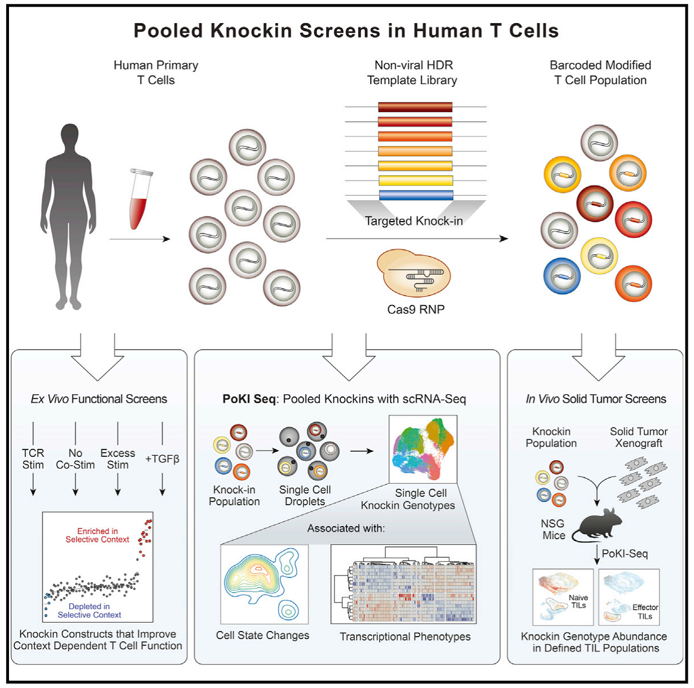
In Brief
Development of a platform to assess the functional effects of pools of knockin constructs targeting one locus allows discovery of constructs promoting anti-tumor activity in T cells.
Highlights
- Method for pooled knockin screens of large DNA sequences at targeted genomic loci
- Rapid discovery of novel synthetic constructs to enhance primary human T cell fitness
- PoKI-seq combines pooled knockins with single-cell RNA sequencing in vitro and in vivo
- Novel chimeric TGF-βR2-41BB receptor hit promotes solid tumor clearance
SUMMARY
Adoptive transfer of genetically modified immune cells holds great promise for cancer immunotherapy. CRISPR knockin targeting can improve cell therapies, but more high-throughput methods are needed to test which knockin gene constructs most potently enhance primary cell functions in vivo. We developed a widely adaptable technology to barcode and track targeted integrations of large non-viral DNA templates and applied it to perform pooled knockin screens in primary human T cells. Pooled knockin of dozens of unique barcoded templates into the T cell receptor (TCR)-locus revealed gene constructs that enhanced fitness in vitro and in vivo. We further developed pooled knockin sequencing (PoKI-seq), combining single-cell transcriptome analysis and pooled knockin screening to measure cell abundance and cell state ex vivo and in vivo. This platform nominated a novel transforming growth factor β (TGF-β) R2-41BB chimeric receptor that improved solid tumor clearance. Pooled knockin screening enables parallelized re-writing of endogenous genetic sequences to accelerate discovery of knockin programs for cell therapies.
INTRODUCTION
Genetically engineered immune cell therapies have proven effective for treatment of some cancer types (Esensten et al., 2017; Fesnak et al., 2016; June and Sadelain, 2018; Sadelain et al., 2017), but they still cannot cure most tumors. Antigen-specific human T cells can be generated ex vivo by non-targeted viral transduction of defined T cell receptors (TCRs), chimeric antigen receptors (CARs), or other synthetic receptors (Esensten et al., 2017). More recent work has revealed potential advantages of targeted integrations of antigen receptor genes into defined genomic loci (Eyquem et al., 2017), which can be achieved with programmable nucleases such as CRISPR-Cas9 along with viral or non-viral knockin templates (Gwiazda et al., 2016; Eyquem et al., 2017; Roth et al., 2018).
CAR T cells are now approved therapy for some hematological malignancies but have not proved effective for solid tumors. While engineering the antigen specificity of T cells can target them to tumors, the cells must also maintain their functionality in the face of challenging immunosuppressive tumor microenvironments (Anderson et al., 2017; Binnewies et al., 2018). Suppressive cytokines such as transforming growth factor β (TGF-β) can be co-opted by tumors to inhibit T cell function (Dahmani and Delisle, 2018; Thomas and Massagué, 2005). Tregs, myeloid-derived suppressor cells (MDSCs), and dendritic and stromal cell populations within the tumor can deprive T cells of necessary co-stimulatory signals or induce inhibitory signals (Chen and Mellman, 2013; Ostrand-Rosenberg et al., 2012). The excessive antigen density and kinetics of antigen exposure in solid tumors can drive exhaustion or dysfunction of T cells (Khan et al., 2019; Wherry, 2011). Next-generation cellular immunotherapies will likely need to be engineered with enhanced function to overcome these challenges presented by solid tumors (Rafiq et al., 2020).
Engineering immune cells that lack inhibitory checkpoint pathways is one strategy that is being widely pursued to enhance cellular therapies. Immune checkpoint inhibitors such as antibodies to PD-1 and CTLA4 have shown dramatic clinical success in re-activating the functionality of endogenous T cells in a subset of patients and tumor types (Weiner et al., 2010). CRISPR-Cas9 genetic ablation of checkpoint targets such as PD-1 in adoptive T cell therapies has also shown increased functionality in certain models and is being pursued clinically (Ren et al., 2017; Rupp et al., 2017; Stadtmauer et al., 2020; Su et al., 2016).
CRISPR is not only being used to knockout well-studied checkpoint genes, but CRISPR screens can inform target selection. Genome-scale pooled CRISPR loss-of-function screens now allow forward genetic studies in many mammalian cell types (Wang et al., 2014; Shalem et al., 2014) including primary T cells where they have identified genes that may be targeted in future immunotherapies (Dong et al., 2019; Shifrut et al., 2018; Wei et al., 2019). Coupling pooled CRISPR gene knockouts with single-cell RNA sequencing (scRNA-seq) provides a powerful approach to assess the effect of each gene perturbation on cell state (Adamson et al., 2016; Datlinger et al., 2017; Dixit et al., 2016; Jaitin et al., 2016). Loss-of-function selections and transcriptome sequencing can reveal critical gene pathways to target.
While gene ablation can enhance cell therapies, the translational potential for knockin of large gene cassettes to re-write cell programs is even greater. Next-generation T cell therapies are being engineered with transgenes designed to overcome suppressive signals in the tumor environment (Kloss et al., 2018; Lynn et al., 2019; Yamamoto et al., 2019). Decades of studies of T cell signaling and function, especially in murine models, suggest numerous candidate gene products that may enhance cell therapies. However, to date, we have lacked rapid methods to test and directly compare the functions of large DNA knockin integrations in human primary cells, which would accelerate the development of more effective cell therapies.
Here, we developed a robust new platform to assess the functional effects of pools of knockin constructs targeting the same locus in parallel and determine that would be most effective at promoting anti-tumor activity. We used nonviral CRISPR targeting to introduce libraries of candidate immunotherapeutic knockin constructs into a defined genome position in human T cells allowing us to compete the cells against each other in vitro and in vivo to test which constructs enhance T cell function. We designed a 36-member library of barcoded knockin templates that included published and novel dominant-negative receptors, synthetic ‘‘switch’’ receptors with engineered intracellular domains, and heterologous transcription factors, metabolic regulators, or receptors. High-throughput pooled screening of targeted cells identified distinct members of the library that promoted T cell fitness under various resting, stimulated, and immunosuppressive in vitro conditions. Direct competition among adoptively transferred human T cells targeted with the pool of constructs in immunodeficient mice bearing human melanoma cells revealed a subset of constructs that promoted in vivo accumulation of tumor infiltrating lymphocytes (TILs). Pooled knockins combined with single-cell sequencing of template barcodes and transcriptomes independently confirmed the constructs that promoted in vivo tumor accumulation and also revealed high-dimensional cellular phenotypes induced by each construct ex vivo and in an in vivo tumor microenvironment. A TGF-βR2-41BB chimeric receptor enhanced cell fitness in TGF-β-treated cells in vitro and tumor accumulation in vivo and also promoted gene expression of key effector cytokines. The knockin cassette encoding a defined TCR and TGF-βR2-41BB improved clearance of a solid tumor model in vivo, nominating a potential lead construct for further clinical development. Overall, these studies demonstrate the power of pooled knockin technology to discover and functionally characterize complex synthetic gene constructs that can be written into targeted genome sites to generate more effective cellular therapies.
RESULTS
Pooled Non-viral Knockin Targeting of Barcoded DNA Templates
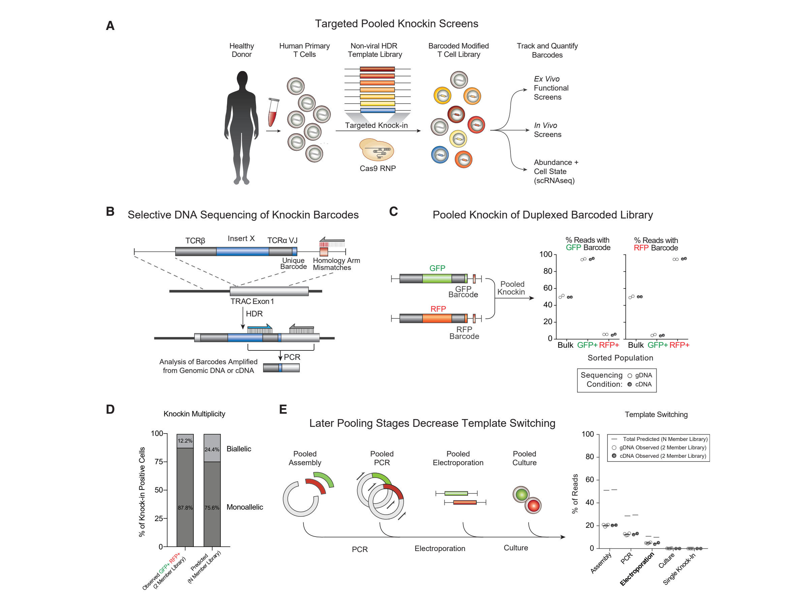
The ability to pool cells with a panel of different large sequence modifications at a specific endogenous genome locus and directly compare the functional consequences would accelerate engineering of cell therapies (Sanjana, 2017). We aimed to develop an adaptable platform to introduce multiple DNA-barcoded templates into a specified genomic target and assess effects on human T cell behavior ex vivo or in vivo with phenotypic screens or single-cell transcriptome analysis (Figure 1A). As a clinically relevant proof-of-concept, we hypothesized that pooled knockin of an HDR template library, where each member contains a constant defined TCR-α and TCR-β pair (the cancer antigen targeted New York esophageal squamous cell carcinoma 1 [NY-ESO-1] TCR, clone 1G4, was used throughout the study) along with a unique third gene product, could rapidly identify new polycistronic DNA sequences that modify T cell function in therapeutically relevant contexts (Figures 1B and S1).
Functional assessment of knockin DNA sequences in pools depends on quantitation of the ‘‘on-target’’ integration of each construct in the cell population before and after selective pressures. We developed a deep sequencing strategy that selectively captures on-target knockin constructs while avoiding NHEJ-edited or un-edited target genomic sequences, non-integrated HDR templates, or off-target integrations (Figures 1B and S2A). Briefly, the majority of a HDR template’s homology arm sequences are not incorporated with on-target HDR integrations (Paquet et al., 2016) and a short DNA sequence that does not match the target genomic locus can be introduced into one homology arm without a large reduction in knockin efficiency (Figures 1B and S2B). PCR primers that anneal to the inserted knockin sequence and to the genomic flanking sequence can then selectively amplify successful on-target HDR events (Figure S2A). Addition of a barcode unique for each insert within degenerate bases of the TCR-α sequence enabled a rapid DNA sequence readout by PCR of the abundance of each individual on-target insert in the pooled population by either of two complementary methods: (1) sequencing directly from genomic DNA (gDNA), or (2) sequencing from reverse transcribed mRNA (cDNA) (Figure 1B).
We first demonstrated that expected DNA barcodes could be selectively sequenced from cells expressing the corresponding knockin encoded protein products. We performed non-viral genome targeting (Nguyen et al., 2020; Roth et al., 2018) of a two-member barcoded library encoding GFP and RFP. Sorting cells with successful HDR knockin (based on expression of the NY-ESO-1 TCR) that co-expressed either GFP+ or RFP+ strongly enriched for the appropriate DNA barcode isolated sequenced from either gDNA or cDNA (Figures 1C and S2C–S2E). Pooled screening approaches have been challenged by template switching that complicate interpretation of DNA barcode readouts (Hanna and Doench, 2018; Hegde et al., 2018; Sack et al., 2016). In addition, multiple barcoded templates introduced in the same cell could complicate interpretation of each one’s effects (Feldman et al., 2018; Roth et al., 2018). We therefore assessed the rates of biallelic integrations and template switching during pooled knockin experiments using the GFP and RFP duplexed barcoded library. Only ~25% of cells showed evidence of multiple integrations (Figures 1D and S2E). Template switching varied based on the stage of library production when constructs were pooled, and we chose to pool all subsequent knockin construct libraries at the electroporation stage (Figure 1E). With this pooling strategy, only ~10% of cells showed evidence of template switching (e.g., nine in ten knockin-positive cells will have the correct combination of knockin construct and barcode) (Figures 1E and S2C–S2J). Approximately 90% of barcodes from sorted GFP+ cells were correct (Figure S2J). These results showed that engineered cell phenotypes could be quantitatively tracked in pooled knockin experiments through DNA barcode sequencing.
Pooled Knockin of a Multiplexed Library of Large DNA Constructs
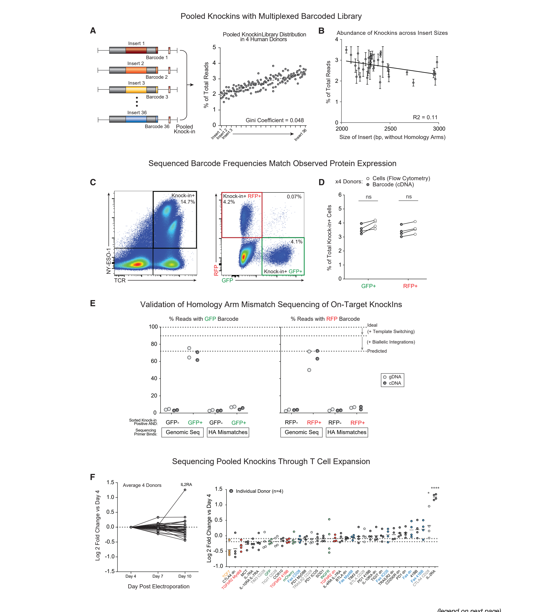
We next examined whether a larger library of 36 pooled templates could also be introduced and tracked by their DNA barcodes. Quantitative barcode sequencing demonstrated that, even with the larger library, all knockin constructs were well-represented across multiple pooled knockin experiments performed in four independent human donors (Figure 2A). The library contained large knockin constructs ranging from 2 kb to 3 kb and even the largest constructs were well-represented across these biological replicates (Figure 2B). The 36-member library contained the GFP and RFP templates previously tested in the 2-member library, and when gating on knockin-positive cells (by dextramer staining for the introduced NY-ESO-1 TCR), GFP+ and RFP+ cells could be identified (Figure 2C). As expected, the percentage of reads with the GFP or RFP sequencing barcodes closely corresponded to the percentage of GFP+ or RFP+ cells observed at the protein level across four human donors (Figure 2D). We next directly validated the homology arm mismatch sequencing strategy (Figure 1B) to selectively amplify on-target barcodes using the larger 36-member pooled knockin library. For both gDNA and cDNA sequencing conditions, when GFP+ or RFP+ cells were sorted from the cells with successful on-target knockin (NY-ESO-1 TCR+), the correct barcodes were selectively sequenced when using primers that bound the genomic sequence at the rate predicted when taking multiple integrations and template switching into account (Figure 2E; STAR Methods). However, as expected, primers complementary to the template homology arm mismatches—that should preferentially amplify non-HDR integrated templates—did not show the same enrichment for correct barcodes in the sorted populations (Figure 2E). Finally, we were able to readily track the relative abundances of knockin construct barcodes over time in an expanding population of T cells cultured in interleukin 2 (IL-2). Barcode abundance was maintained throughout expansion for all constructs, with a notable exception of the knockin construct encoding IL2RA, the high-affinity receptor for the interleukin (IL-2), which enriched over time in culture consistent with its known roles promoting T cell fitness (Figure 2F). These results showed large pooled knockin libraries can be generated and their barcodes can be quantitatively sequenced in a human T cell population.
Pooled Knockin Screens Identify Gene Constructs to Improve Context-Dependent Fitness of Human T Cells
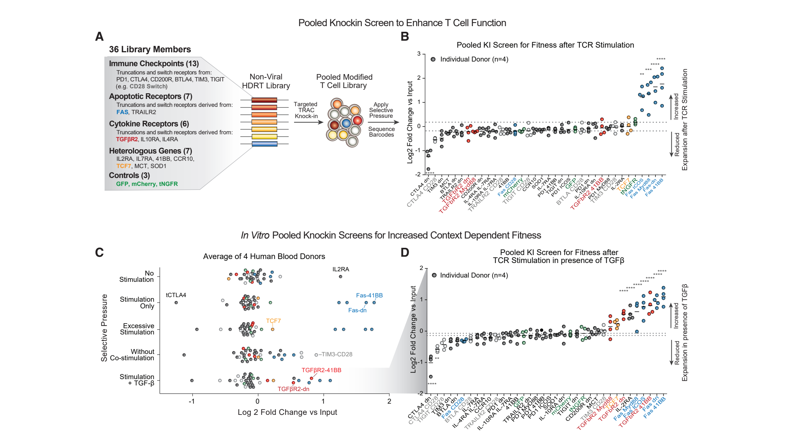
Next, the barcoded knockin construct library was introduced into a population of cells with various selective pressures applied to identify constructs that could enhance context-dependent cell fitness. We used this modified T cell library to discover synthetic constructs that can be written into the endogenous TRAC locus in primary human T cells to enhance functions relevant for cancer immunotherapies. The 36-member library of long DNA sequences that we designed included published and novel dominant-negative receptors (Chen et al., 2016; Gorelik and Flavell, 2000; Kim et al., 2017; Kloss et al., 2018; Shin et al., 2016), synthetic ''switch'' receptors with engineered intracellular domains (Arber et al., 2017; Leen et al., 2014; Liu et al., 2016; Oda et al., 2017; Prosser et al., 2012; Shin et al., 2012; Tay et al., 2017; Yamamoto et al., 2019), and heterologous transcription factors, metabolic regulators, and receptors (Figures 3A and S3A). We chose to include synthetic knockin constructs that could alter cellular responses to suppressive or apoptotic signals (e.g., with chimeric synthetic receptors designed with extracellular domains that recognize inhibitory signals linked to intracellular domains from stimulatory receptors), as well as constructs that would overexpress natural gene products associated with cell fitness or activation (such as IL2RA or 41BB). Each member of the library was cloned with self-cleaving peptide sequences between the TCRβ (full-length) and TCRα (V-region only) along with TRAC locus homology arms. Non-viral genome targeting with each member of this HDR template library achieved successful knockin demonstrated by expression of the newly integrated NY-ESO-1 TCR (Figures S3B–S3E).
We first tested which DNA sequences inserted into the TRAC locus would enhance T cell expansion upon in vitro stimulation. Following anti-CD3/CD28 stimulation, we observed a striking enrichment of constructs encoding various synthetic versions of the Fas receptor (Figure 3B). Fas is a tumor necrosis factor (TNF) super family surface receptor that mediates apoptosis through interactions with its ligand, FasL (Strasser et al., 2009). The pooled knockin screens confirmed the functional effects of a recently described truncated Fas receptor (Yamamoto et al., 2019) included as a positive control and also identified novel synthetic Fas switch receptors, including one with a 41BB intracellular domain, that also promoted T cell fitness in stimulated conditions (Figure 3B). In contrast, a truncated CTLA4 protein decreased T cell fitness in the same conditions across four donors, likely due to competition for CD28 co-stimulatory signaling (Figure 3B). These data established a flexible discovery platform to identify synthetic knockin programs that promote selectable T cell phenotypes.
Effective adoptive T cell therapies for cancer must function even in immunosuppressive environments. To identify gene modifications that enhance T cell fitness upon various challenges, we repeated the pooled screen in diverse in vitro conditions designed to mimic aspects of tumor microenvironments (Figures 3C and S4A–S4D). With excessive stimulation, which partially mirrors antigenic abundance in tumor environments, the transcription factor TCF7 (encoding the protein TCF1) slightly increased cell abundance, although this effect did not reach statistical significance (Figure S4B). TCR stimulation without anti-CD28 co-stimulation selected for various chimeric receptors with intracellular CD28 domains such as TIM3-CD28 and CTLA4-CD28 (Figure S4C). Finally, addition of the immunosuppressive cytokine TGF-β1 gave cells expressing engineered TGF-βR receptors a selective fitness advantage, including both a previously described truncated TGF-βR2 receptor (Gorelik and Flavell, 2000; Kim et al., 2017; Kloss et al., 2018) included as a positive control and a novel chimeric TGF-βR2-41BB receptor (Figures 3D, S4D, and S4E). The results of these pooled targeted knockin screens were reproducible across multiple biological replicates, technical replicates, sorting conditions, and pooling conditions (Figures S4F–S4H). These data from pooled knockin screens highlight condition-specific functional enhancements conferred by synthetic proteins or forced expression of key regulators.
Pooled Knockin Hits Individually Validated and Improved In Vitro Cancer Cell Killing
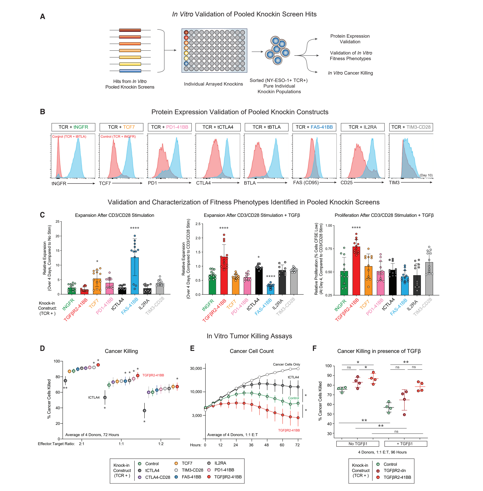
Pooled knockin screens identified gene constructs that conferred competitive advantages to knockin cells in the targeted population. We wanted to validate the pooled knockin screening platform and confirm that the knockin construct ''hits'' would similarly improve T cell fitness in individual knockin experiments (Figure 4A). First, we tested to ensure that the DNA knockin constructs resulted in expression of the expected protein products. Surface and intracellular staining of cells with eight individual knockin constructs revealed robust expression for each expected protein, including increased expression of Fas and CD25 (IL2RA) above endogenous expression levels in stimulated T cells (Figures 4B and S5A). We next directly validated for eight individual knockin constructs the fitness benefits identified in the context-dependent in vitro pooled screens (Figure 3C). Indeed, the anti-apoptotic Fas-41BB chimera and anti-suppressive TGF-βR2-41BB chimera both promoted context-dependent increased expansion relative to controls (Figures 4C and S5B). Increased cell expansion induced by the TGF-βR2-41BB construct correlated with evidence of increased cell proliferation in the presence of TGF-β (measured by carboxyfluorescein succinimidyl ester [CFSE] dilution relative to control cells) (Figures 4C and S5B). These findings validated the pooled library-based approach to identify individual knockin sequences to engineer T cell function.
We next tested to see if the identified knockin constructs that promoted context-dependent T cell ex vivo expansion could also enhance in vitro cancer cell killing. Although this was not the phenotype initially tested in the pooled screens, the TGF-βR2-41BB increased in vitro cancer cell killing in T cells from four human blood donors across a range of effector to target cell ratios (Figures 4D and 4E). In contrast, a truncated CTLA4 construct showed reduced cell killing (Figures 4D and 4E), consistent with its impaired fitness in the pooled knockin screens (although diminished proliferation assessed by CFSE was not observed with this individual construct, Figure S5B). Finally, we examined if the TGF-βR2-41BB chimeric receptor also showed further context-dependent improvements in in vitro cancer killing. In the presence of exogenous TGF-β, the TGF-βR2-41BB construct successfully rescued the impaired cancer cell killing across experiments performed from four healthy human donors (Figure 4F).
Although the pooled screens focused on cell-intrinsic effects on T cell fitness, they also successfully identified novel gene constructs that can enhance in vitro anti-cancer cell efficacy.
Pooled Knockin Sequencing: Pooled Knockins with Single-Cell Transcriptome Analysis to Assess Abundance and Cell State
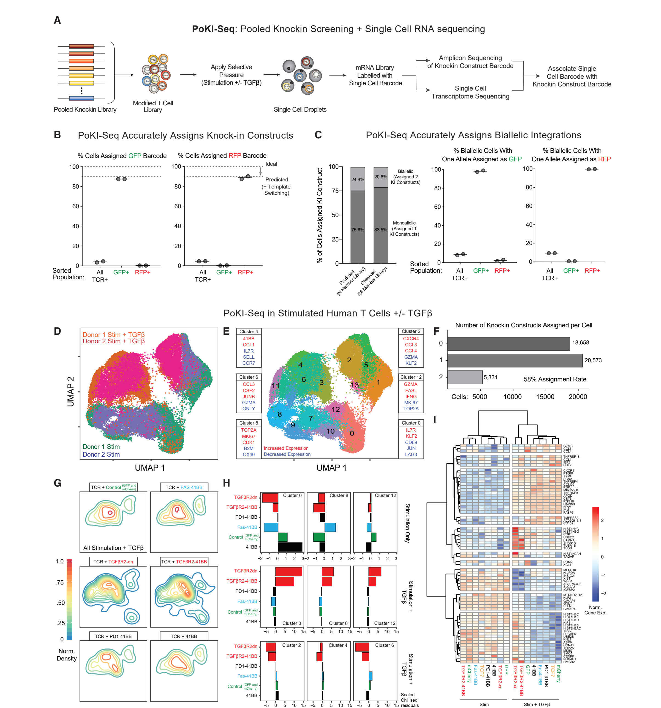
Pooled screening approaches reveal modifications that affect cellular abundance in a population. However, cell abundance measures only one aspect of cellular function, and an ideal screening methodology would allow systematic assessment of modified cell states as well. Recently, novel barcoding strategies have overcome this and allowed pooled populations of CRISPR knockout cells to be assessed by scRNA-seq (Adamson et al., 2016; Datlinger et al., 2017; Dixit et al., 2016; Jaitin et al., 2016), including primary human T cells (Shifrut et al., 2018). We next tested whether pooled knockin screening could similarly be coupled with scRNA-seq to generate high-dimensional phenotypic information on modified cell states while also recording each cell's specific knockin construct barcodes, a method we term pooled knockin sequencing (PoKI-Seq) (Figure 5A). Briefly, the mRNA library converted to cDNA following single-cell droplet isolation (10x) was split, with part used for scRNA-seq and the other for targeted amplicon sequencing of the knockin barcode (Figure S6A).
First, to validate that the fidelity of PoKI-Seq template barcodes is maintained throughout the experimental pipeline, we repeated GFP and RFP sorting experiments with the single-cell platform. Sorting GFP+ or RFP+ cells from the pooled knockin-positive population (NY-ESO-1 TCR+) strongly enriched for the expected template barcodes, confirming the ability of PoKI-Seq to accurately assign specific knockin constructs to cells (Figure 5B). One advantage of PoKI-Seq over bulk amplicon sequencing of pooled knockins is the ability to discriminate cells with a single knockin construct from those that have received more than one (most likely from biallelic integrations). The overall proportion of cells assigned two knockin constructs (Figure 5C) closely corresponded with predicted frequencies based on GFP/RFP 2-member library experiments (Figure 1D). As expected, when sorted GFP+ or RFP+ cells were assigned two knockin constructs, at least one of the knockin constructs assigned was almost always either GFP or RFP, respectively (Figure 5C). Droplet doublets could also appear as multiple barcode calls, but the predicted doublet rate of ~2% (Zheng et al., 2017) would account for only a fraction of the cells with more than one barcode. Overall, these experiments confirmed the molecular biology of PoKI-Seq and also demonstrated its ability to phenotype individual cells with either single or multiple knockin constructs.
We next used PoKI-Seq to assign template barcodes to single-cell transcriptomes in a large population of cells with the full pooled knockin library. We performed PoKI-Seq on cells from two human blood donors following ex vivo stimulation in the presence or absence of exogenous TGF-β. Distinct clusters of cell states emerged, especially with addition of exogenous TGF-β (Figures 5D and 5E). Over 40,000 individual cells were sequenced, of which ~58% were successfully assigned one (monoallelic) or two (biallelic) barcodes (Figure 5F). Quality control metrics following PoKI-Seq confirmed robust rates of gene and universal molecular identifier (UMI) identification per cell and an average >130× coverage of cells assigned to each knockin construct (per blood donor and per ex vivo condition tested) (Figures S6B and S6C). Single cell template barcode assignments were confirmed further as transcripts encoded by corresponding knockin constructs tended to be expressed at increased levels, similar to what had been observed at the protein level with delivery of individual knockin constructs (Figures 4B and S6D). These metrics together established the fidelity of barcode assignment to single cell transcriptomes for the PoKI-Seq platform.
Next, we examined whether PoKI-Seq could measure cell state changes in ex vivo human T cells caused by specific knockin constructs. Each knockin construct caused distinct enrichment patterns in individual cell clusters in both TCR stimulation and stimulation plus TGF-β conditions that broadly corresponded to results from the in vitro pooled knockin screens (Figure S6E). Density plots for individual knockin constructs revealed significant cell state differences in T cells modified with TGF-βR2-derived constructs compared to control and non-TGF-βR2-derived constructs in the stimulation plus TGF-β culture condition (Figure 5G). Specifically, cells possessing TGF-βR2-derived constructs were more likely to be found in clusters otherwise associated with the stimulation-only condition rather than the stimulation + TGF-β condition, including cluster 8, characterized by genes associated with cell proliferation, and cluster 12, characterized by genes associated with cell killing (Figures 5E, 5H, S6E, and S6F). Similarly, the TGF-βR2-derived knockin constructs were relatively depleted from cells in the clusters otherwise promoted by TGF-β treatment (clusters 2, 4, and 6) (Figure 5H). Clustering of knockin constructs across all genes differentially expressed in the identified single-cell clusters showed strong similarity between the TGF-βR2-derived constructs in the presence of TGF-β and revealed downstream target genes that are modulated by the receptors. Hierarchical clustering revealed that exposure to TGF-β drove the greatest transcriptional changes (Figures 5I and S6G). For example, in the presence of exogenous TGF-β, TGF-βR2-derived chimeric receptors promoted continued expression of various hallmark proliferative genes such as MKI67 and TOP2A, while these genes were inhibited by TGF-β in cells expressing other knockin constructs. PoKI-Seq confirmed the shared biological effects of multiple TGF-βR2-derived receptors, which convert a suppressive signal into a signal that promotes cell proliferation and an effector cell state. More generally, PoKI-Seq was able to reveal target gene pathways and context-dependent changes in cell state modulated by individual knockin constructs.
In Vivo PoKI-Seq of Engineered Human T Cells in a Solid Tumor Microenvironment
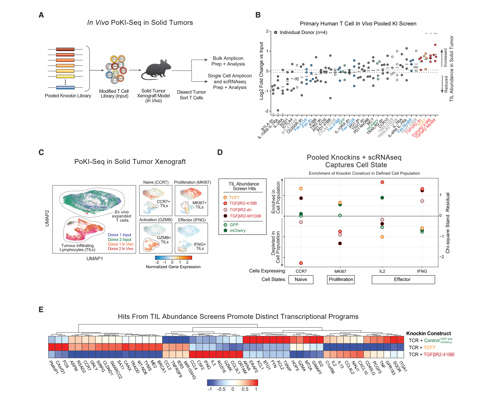
Despite the flexibility of in vitro assays, certain aspects of cancer immunobiology can only be assessed in vivo. We therefore tested if PoKI-Seq could also be used to assess in vivo fitness of engineered human T cells in a solid tumor model (Figure 6A). We performed in vivo pooled knockin screens using an antigen-specific human melanoma xenograft model (Roth et al., 2018), followed by either bulk amplicon sequencing (Figure 1B) or PoKI-Seq with combined single cell amplicon and RNA-sequencing (Figure 4A). A pooled modified T cell population was transferred into immunodeficient NSG mice bearing human melanoma cells expressing the NY-ESO-1 antigen, and T cells were extracted from the tumor 5 days later (Figure S7A). Due to the lower number of human T cells isolatable from individual solid tumor xenografts (generally 10,000–20,000 cells per mouse), greater variance between replicates and donors was observed in the in vivo screens than in the in vitro screens (Figures S7B and S7C). Nonetheless, across four individual human donors, several knockin constructs promoted statistically significant in vivo accumulation of engineered T cells in the tumor environment (Figure 6B), including a construct not identified in the in vitro screens. The TCF7 knockin construct that only showed mild effects in vitro (not reaching statistical significance) promoted accumulation of T cells in the tumor microenvironment across four donors (Figure 6B). These results underscore the power of complementary in vitro and in vivo assays to assess synthetic gene functions.
Increased abundance may not always correspond to functional efficacy of TILs. scRNA-seq also revealed each knockin construct’s effect on the transcriptome in both the input and tumor-infiltrating T cells. We next used PoKI-Seq to compare the transcriptomes of ex vivo expanded T cells with pooled knockin templates and sorted pooled knockin T cells from the in vivo tumor microenvironment (Figures 6C and S7C–S7F). A UMAP representation of the single-cell transcriptomes showed a high degree of overlap between cells from two human donors and marked differences between the ex vivo (input) cell population and tumor infiltrating (in vivo) T cells including differential expression of genes associated with proliferation or effector function (Figure 6C). We next examined whether the knockin programs that increased TIL abundance enriched or depleted in subsets of the TIL population expressing hallmark genes for naive, effector, and other cell populations (Figure 6D). While both the transcription factor TCF7 and TGF-βR2-derived synthetic receptors increased T cell abundance in solid tumors, they induced different cell states. Strikingly, the TCF7 construct was relatively enriched in CCR7+ TILs, while TGF-βR2-41BB was relatively enriched in both IL-2+ and interferon (IFN)γ+ TIL populations (Figure 6D). These data suggest that TCF7 promotes a more naive or quiescent state, whereas the TGF-βR2-41BB construct promotes accumulation of cells expressing key effector cytokine genes. Consistent with this model, in mouse chronic viral infection and syngeneic tumor models, TCF7+ cells have increased proliferative potential and less differentiated phenotypes during immunotherapies (Kurtulus et al., 2019; Siddiqui et al., 2019; Wu et al., 2016), but TCF7 expression was lost upon differentiation into effector cells (Siddiqui et al., 2019). To further investigate the differences in cell state between these two cell abundance hits, we compared the in vivo transcriptional programs induced by TCF7, the switch receptor TGF-βR2-41BB, and controls (GFP and mCherry) using pseudo-bulked transcriptional data from all cells with each knockin construct barcode (Figure 6E). While both TCF7 and TGF-βR2-41BB promoted expression of genes such as TNFSFR9 (41BB) relative to control cells, the TGF-βR2-41BB knockin induced a distinct transcriptional program compared to TCF7 knockin cells, with higher expression of effector cytokines such as IFN-γ that could enhance tumor clearance.
A Novel TGF-βR2-41BB Chimeric Receptor Nominated by In Vitro and In Vivo Pooled Knockin Screens Improves Solid Tumor Clearance by Primary Human T Cells
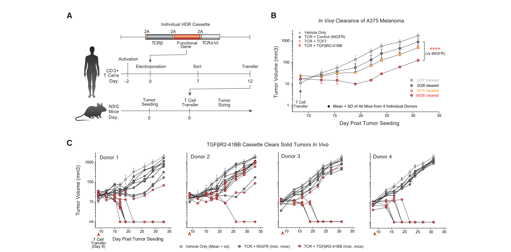
Finally, we examined in vivo the functional capacity in a solid tumor xenograft model (Figure 7A) of two hits from TIL abundance screens that promoted distinct cell states, TCF7, which enriched in CCR7+ TIL sub-populations, and TGF-βR2-41BB, which enriched in IL-2+ and IFNG+ TIL sub-populations (Figure 6D). T cells engineered with a polycistronic knockin construct expressing a NY-ESO-1-specific TCR (1G4 clone) along with either a control construct (tNGFR), the transcription factor TCF7, or the chimeric TGF-βR2-41BB receptor all showed statistically significant reductions in tumor size relative to vehicle only injections of media (Figure 7B). Consistent with TCF7 promoting TIL abundance, but not promoting mature effector cytokine expressing cells, the TCF7 cell population did not enhance tumor control relative to tNGFR controls (Figure 7B). In contrast, the TGF-βR2-41BB receptor construct that promoted abundance and effector cytokine gene expression in TILs markedly reduced tumor sizes (p < 0.0001 at day 33 versus TCR+tNGFR). Cells with the TGF-βR2-41BB construct were the only ones that successfully cleared the solid tumor model at the doses tested here, an effect that was reproducible in many of the mice tested with modified T cells from 4 human blood donors (Figures 7B and 7C). Taken together, pooled knockin screening combined with scRNA-seq can rapidly reveal new DNA sequences with potential to enhance therapeutic T cell functions.
DISCUSSION
Genetically engineered T cell therapies—including CAR T cells and TCR-modified T cells—are approved treatments for some hematological cancers and under active clinical development for a wide range of diseases. Mounting evidence suggests that for many clinical applications, engineering antigen specificity will not be sufficient to cure disease. For example, T cell function is often suppressed by tumors, and further engineering of antigen-specific T cells will be required to promote more effective cell states. Loss-of-function studies in T cells have revealed genes that can be ablated to enhance T cell responses (Dong et al., 2019; Shifrut et al., 2018; Wei et al., 2019). Many groups now are testing candidate transcription factors (Lynn et al., 2019) or synthetic cell receptors (Kloss et al., 2018; Yamamoto et al., 2019) that can be overexpressed to reprogram CAR T cells, prevent exhaustion, or convert suppressive extracellular signals to activating signals. The field needs a systematic approach to compare complex transgene constructs head-to-head and determine which are most effective for specific disease indications. The pooled knockin platform presented here offers a new opportunity to screen systematically for large gene constructs that can be added to a T cell to modulate critical functions for effective cell therapies.
Targeted non-viral pooled knockin screens have notable advantages over other systems that potentially could be used to discover effects of gene gain-of-function. Most overexpression studies have been performed with lentiviral or retroviral vectors. Although these viral vectors could be pooled, several important technical factors would limit their applications. These vectors have variable integration copy numbers and integrate at semirandom genome sites, which can cause variability in transgene expression and altered cell phenotypes due to insertional mutagenesis (Cavazzana-Calvo et al., 2010; Romero et al., 2013). These sources of variability could complicate interpretation of pooled screens, introducing both false-positives and false-negatives. In addition, lentiviral and retroviral library preparation is laborious and can lead to significant barcode swapping due to viral recombination (Sack et al., 2016). In contrast to lentiviral and retroviral transgenesis, pooled non-viral HDR templates allow for targeted integration at a defined site with relatively consistent transgene expression levels and low rates of barcode mis-assignment without requiring viral packaging steps.
Pooled, non-viral knockin screens add to a growing constellation of CRISPR technologies to enable scalable gain-of-function screening, especially CRISPR-activation (CRISPRa) approaches to increase expression of endogenous genes (Chavez et al., 2015; Gilbert et al., 2013, 2014). Technical challenges have limited CRISPRa applications in therapeutically relevant primary human cell types. Furthermore, CRISPRa can only induce natural gene products encoded in the genome and does so with variable efficiency. Gain-of-function screens can be accomplished in cell lines at targeted genomic sites with CRISPR-mediated saturating mutagenesis (Hess et al., 2016; Ma et al., 2016). CRISPR-based pooled knockin of short oligos and the functional assessment of single nucleotide variants is possible at an endogenous locus in a cell line (Findlay et al., 2014, 2018). In contrast to these technologies that have shown promise for screening small mutations in immortalized cells lines, we now present a new CRISPR platform to test large knockin candidate therapeutic constructs in primary human cells, which should accelerate the development of improved cellular therapies.
Our integrated pooled knockin platform nominated a lead hit (TGF-βR2-41BB) that increased T cell fitness in vivo and promoted key effector cytokines including IFNγ. TGF-β is a key suppressive cytokine normally produced by immune cells but which can be co-opted by tumors to suppress effective immune responses (Batlle and Massagué, 2019; Gigante et al., 2012). Knockin of large genetic constructs enables the engineering of synthetic receptors to re-wire the signal T cells receive when exposed to TGF-β in the tumor microenvironment, including switching the suppressive TGF-β signal to a stimulatory 41BB signal. This lead construct indeed showed markedly enhanced clearance of an in vivo solid tumor model. The preclinical success of a novel construct nominated by pooled knockin screens highlights the power of the platform. The pooled knockin platform will also enable follow-up screens to optimize the lead construct’s efficacy and safety.
Barcoded knockin libraries have even broader potential to study functional effects of sequence variation at any selected site in the genome. A major challenge to quantitative tracking of targeted genomic integrations of pooled knockin constructs has been the abundance of non-integrated DNA templates (viral or non-viral) in targeted cells and the risk of template switching during molecular steps of pooled library production, integration, and sequencing. Here, we overcame these technical limitations with a widely adaptable technology to barcode and track on-target integrations of HDR templates in a pooled library. The HDR knockin modifications all occur at the same genome locus and are tested in cells by head-to-head competition against each other. Each knockin construct can be tracked in the targeted cell population under diverse in vitro and in vivo conditions to reveal the most effective modifications. Effective barcoding of targeted knockin sequences also allowed single-cell transcriptome readouts in a pool of modified cells to assess the effects of each knockin construct on cell state, a method we term PoKI-Seq. This allowed us not only to screen for constructs that increased cell abundance with different in vitro and in vivo selective pressures, but also to perform high dimensional analysis of the cellular phenotypes resulting from each large knockin DNA cassette. Perturb-seq technologies have been transformative for systematic assessment of gene ablations. PoKI-Seq offers a complementary single-cell approach to study large knockin perturbations in pooled experiments. Barcodes could be sequenced from either cDNA or genomic DNA, which suggests future pooled phenotypic screens will be possible to assess function of coding and non-coding regions of the genome. Furthermore, multiplexed knockin targeting is achievable (Roth et al., 2018), so future studies could examine the combinatorial effects of DNA inserts at multiple loci in the same cell. We will be able to scale knockin construct size and the number of members in each library as we continue to improve knockin efficiency and reduce costs of DNA synthesis.
Overall, the ability to rapidly integrate diverse libraries of new genetic sequences at defined sites in the genome will open many new avenues for understanding the functional rules of the human genome code and for reprogramming enhanced cell therapies. Barcoded pools of non-viral HDR templates can now be used to explore the in vitro and in vivo functions of diverse sequence variants at targeted coding and non-coding elements in the genomes of primary human cells. Future studies will be able to extend similar approaches to additional genomic loci, additional panels of candidate knockin constructs, additional selectable in vitro and in vivo phenotypes and additional cell types. Engineered cell therapies are an emerging ‘‘drug’’ class, alongside small molecules and biologics (Fischbach et al., 2013). Non-viral pooled knockin screening will accelerate the discovery and development of synthetic DNA sequences to reprogram the specificity and function of adoptive cellular therapies.
STAR★METHODS
Detailed methods are provided in the online version of this paper and include the following:
- KEY RESOURCES TABLE
- LEAD CONTACT AND MATERIALS AVAILABILITY
- EXPERIMENTAL MODEL AND SUBJECT DETAILS
- Isolation and culture of human primary T cells
- In Vivo Mouse Solid Tumor Xenograft
- METHOD DETAILS
- RNP production
- Double-stranded HDR DNA Template Production
- Primary T Cell Electroporation
- Flow Cytometry and Cell Sorting
- In Vitro Proliferation Assay
- In Vitro Cytokine Release Assay
- In Vitro Antigen Specific Killing Assay
- Pooled Knockin Screening
- PoKI-Seq: Pooled Knockin Screening plus Single-Cell RNA Sequencing
- QUANTIFICATION AND STATISTICAL ANALYSIS
- Statistical Analysis
- Predicted Amount of Template Switching
- Predicted Correct Knockin Barcode Frequency
- Analysis of Pooled Knockin Screens
- Analysis of PoKI-Seq Screens
- DATA AND CODE AVAILABILITY
SUPPLEMENTAL INFORMATION
Supplemental Information can be found online at https://doi.org/10.1016/j.cell.2020.03.039.
ACKNOWLEDGMENTS
We thank members of the A.M. lab; Chris Jeans (QB3 MacroLab); Eric Chow (UCSF Center for Advanced Technology); Ryan Wagner and Reuben Hogan (Parnassus CAT); Vinh Nguyen (UCSF Flow Cytometry Core, P30 DK063720 and NIH S10 1S10OD021822-01); and Kevin Lou, Julia Carnevale, Sarah Pyle, Antoni Ribas, Fyodor Urnov, and E. John Wherry for their helpful suggestions and generous assistance. T.L.R. was supported by the UCSF Medical Scientist Training Program (T32GM007618), the UCSF Endocrinology Training Grant (T32 DK007418), and the NIDDK (F30DK120213). F.B. was supported by the Care-for-Rare Foundation and the German Research Foundation (DFG). A.M. holds a Career Award for Medical Scientists from the Burroughs Wellcome Fund; is an investigator at the Chan Zuckerberg Biohub; has received funding from the Innovative Genomics Institute (IGI), the American Endowment Foundation, the Cancer Research Institute (CRI), the Lloyd J. Old STAR award, a gift from the Jordan Family, and a gift from Barbara Bakar; and is a member of the Parker Institute for Cancer Immunotherapy (PICI). This research was supported by NIH/NIGMS funding for the HIV Accessory & Regulatory Complexes (HARC) Center (P50AI150476 to A.M.).
AUTHOR CONTRIBUTIONS
T.L.R. designed the study. T.L.R. designed the pooled knockin screening and PoKI-Seq strategies. T.L.R., P.J.L., and J.F.N. designed constructs for pooled knockins. T.L.R., J.F.N., F.B., and R.A. performed pooled knockin experiments. T.L.R., J.F.N., R.A., and E.S. computationally analyzed pooled knockin experiments. T.L.R., C.M., C.J.Y., and E.S. designed, performed, and analyzed pooled knockin plus single-cell RNA sequencing experiments. T.L.R., P.J.L., and F.B. performed in vitro and in vivo validation experiments. D.N.N. advised on the use of anionic polymers. D.G., J.A.B., and K.R. advised on the manuscript. T.L.R., P.J.L., and A.M. wrote the manuscript with input from all authors.
DECLARATION OF INTERESTS
The authors declare the following competing financial interests: T.L.R., K.R., and A.M. are co-founders of Arsenal Biosciences. T.L.R. served as the CSO of Arsenal Biosciences from March through December 2019. E.S. and D.G. served as advisors for Arsenal Biosciences. A.M. is a co-founder of Spotlight Therapeutics. K.R. was a founder of Cell Design Labs. J.A.B. is a founder of Sonoma Biotherapeutics. A.M. serves on the scientific advisory board of PACT Pharma, is an advisor to Trizell, and was a former advisor to Juno Therapeutics. A.M. owns equity in Arsenal Biosciences, Spotlight Therapeutics and PACT Pharma. J.A.B. is a consultant for Juno, a Celgene company; a stock holder and member of the Board of Directors of Provention and Rheos Medicines; a member of the Scientific Advisory Board of Pfizer Center for Therapeutic Innovation; a member of the Scientific Advisory Board and stock holder for Vir Therapeutics, Arcus Biotherapeutics, Quentis Therapeutics, Solid Biosciences, NeoCept (Founder) and Celsius Therapeutics (Founder). J.A.B. owns stock in MacroGenics Inc., Provention, Viacyte Inc., and Kadmon Holdings. The Marson Laboratory has received sponsored research support from Juno Therapeutics, Epinomics, Sanofi, and a gift from Gilead. Patents have been filed based on the findings described here.
REFERENCES
Adamson, B., Norman, T.M., Jost, M., Cho, M.Y., Nuñez, J.K., Chen, Y., Villalta, J.E., Gilbert, L.A., Horlbeck, M.A., Hein, M.Y., et al. (2016). A Multiplexed Single-Cell CRISPR Screening Platform Enables Systematic Dissection of the Unfolded Protein Response. Cell 167, 1867–1882.
Anderson, K.G., Stromnes, I.M., and Greenberg, P.D. (2017). Obstacles Posed by the Tumor Microenvironment to T cell Activity: A Case for Synergistic Therapies. Cancer Cell 31, 311–325.
Arber, C., Young, M., and Barth, P. (2017). Reprogramming cellular functions with engineered membrane proteins. Curr. Opin. Biotechnol. 47, 92–101.
Batlle, E., and Massagué, J. (2019). Transforming Growth Factor-β Signaling in Immunity and Cancer. Immunity 50, 924–940.
Binnewies, M., Roberts, E.W., Kersten, K., Chan, V., Fearon, D.F., Merad, M., Coussens, L.M., Gabrilovich, D.I., Ostrand-Rosenberg, S., Hedrick, C.C., et al. (2018). Understanding the tumor immune microenvironment (TIME) for effective therapy. Nat. Med. 24, 541–550.
Butler, A., Hoffman, P., Smibert, P., Papalexi, E., and Satija, R. (2018). Integrating single-cell transcriptomic data across different conditions, technologies, and species. Nat. Biotechnol. 36, 411–420.
Cavazzana-Calvo, M., Payen, E., Negre, O., Wang, G., Hehir, K., Fusil, F., Down, J., Denaro, M., Brady, T., Westerman, K., et al. (2010). Transfusion independence and HMGA2 activation after gene therapy of human b-thalassaemia. Nature 467, 318–322.
Chavez, A., Scheiman, J., Vora, S., Pruitt, B.W., Tuttle, M., P.R. Iyer, E., Lin, S., Kiani, S., Guzman, C.D., Wiegand, D.J., et al. (2015). Highly efficient Cas9-mediated transcriptional programming. Nat. Methods 12, 326–328.
Chen, D.S., and Mellman, I. (2013). Oncology meets immunology: the cancer-immunity cycle. Immunity 39, 1–10.
Chen, N., Morello, A., Tano, Z., and Adusumilli, P.S. (2016). CAR T-cell intrinsic PD-1 checkpoint blockade: A two-in-one approach for solid tumor immunotherapy. Oncoimmunology 6, e1273302.
Dahmani, A., and Delisle, J.S. (2018). TGF-β in T cell biology: Implications for cancer immunotherapy. Cancers (Basel) 10, E194.
Datlinger, P., Rendeiro, A.F., Schmidl, C., Krausgruber, T., Traxler, P., Klughammer, J., Schuster, L.C., Kuchler, A., Alpar, D., and Bock, C. (2017). Pooled CRISPR screening with single-cell transcriptome readout. Nat. Methods 14, 297–301.
Dixit, A., Parnas, O., Li, B., Chen, J., Fulco, C.P., Jerby-Arnon, L., Marjanovic, N.D., Dionne, D., Burks, T., Raychowdhury, R., et al. (2016). Perturb-Seq: Dissecting Molecular Circuits with Scalable Single-Cell RNA Profiling of Pooled Genetic Screens. Cell 167, 1853–1866.e17.
Dong, M., Wang, G., Chow, R., Ye, L., Zhu, L., Dai, X., Park, J., Kim, H., Errami, Y., Guzman, C., et al. (2019). Systematic Immunotherapy Target Discovery Using Genome-Scale In Vivo CRISPR Screens in CD8 T Cells. Cell 178, 1189–1204.
Esensten, J.H., Bluestone, J.A., and Lim, W.A. (2017). Engineering Therapeutic T Cells: From Synthetic Biology to Clinical Trials. Annu. Rev. Pathol. 12, 305–330.
Eyquem, J., Mansilla-Soto, J., Giavridis, T., van der Stegen, S.J., Hamieh, M., Cunanan, K.M., Odak, A., Gönen, M., and Sadelain, M. (2017). Targeting a CAR to the TRAC locus with CRISPR/Cas9 enhances tumour rejection. Nature 543, 113–117.
Fabregat, A., Jupe, S., Matthews, L., Sidiropoulos, K., Gillespie, M., Garapati, P., Haw, R., Jassal, B., Korninger, F., May, B., et al. (2018). The Reactome Pathway Knowledgebase. Nucleic Acids Res. 46 (D1), D649–D655.
Feldman, D., Singh, A., Garrity, A.J., and Blainey, P.C. (2018). Lentiviral copackaging mitigates the effects of intermolecular recombination and multiple integrations in pooled genetic screens. bioRxiv. https://doi.org/10.1101/262121.
Fesnak, A.D., June, C.H., and Levine, B.L. (2016). Engineered T cells: the promise and challenges of cancer immunotherapy. Nat. Rev. Cancer 16, 566–581.
Findlay, G.M., Boyle, E.A., Hause, R.J., Klein, J.C., and Shendure, J. (2014). Saturation Editing of Genomic Regions by Multiplex Homology-Directed Repair. Nature 513, 120–123.
Findlay, G.M., Daza, R.M., Martin, B., Zhang, M.D., Leith, A.P., Gasperini, M., Janizek, J.D., Huang, X., Starita, L.M., and Shendure, J. (2018). Accurate Classification of BRCA1 Variants With Saturation Genome Editing. Nature 562, 217–222.
Fischbach, M.A., Bluestone, J.A., and Lim, W.A. (2013). Cell-based therapeutics: the next pillar of medicine. Sci. Transl. Med. 5, 179ps7.
Gigante, M., Gesualdo, L., and Ranieri, E. (2012). TGF-β: a master switch in tumor immunity. Curr. Pharm. Des. 18, 4126–4134.
Gilbert, L.A., Larson, M.H., Morsut, L., Liu, Z., Brar, G.A., Torres, S.E., Stern-Ginossar, N., Brandman, O., Whitehead, E.H., Doudna, J.A., et al. (2013). CRISPR-mediated modular RNA-guided regulation of transcription in eukaryotes. Cell 154, 442–451.
Gilbert, L.A., Horlbeck, M.A., Adamson, B., Villalta, J.E., Chen, Y., Whitehead, E.H., Guimaraes, C., Panning, B., Ploegh, H.L., Bassik, M.C., et al. (2014). Genome-Scale CRISPR-Mediated Control of Gene Repression and Activation. Cell 159, 647–661.
Gorelik, L., and Flavell, R.A. (2000). Abrogation of TGFβ signaling in T cells leads to spontaneous T cell differentiation and autoimmune disease. Immunity 12, 171–181.
Gwiazda, K.S., Grier, A.E., Sahni, J., Burleigh, S.M., Martin, U., Yang, J.G., Popp, N.A., Krutein, M.C., Khan, I.F., Jacoby, K., et al. (2016). High Efficiency CRISPR/Cas9-mediated Gene Editing in Primary Human T-cells Using Mutant Adenoviral E4orf6/E1b55k ‘‘Helper’’ Proteins. Mol. Ther. 24, 1570–1580.
Hanna, R.E., and Doench, J.G. (2018). A case of mistaken identity. Nat. Biotechnol. 36, 802–804.
Hegde, M., Strand, C., Hanna, R.E., and Doench, J.G. (2018). Uncoupling of sgRNAs from their associated barcodes during PCR amplification of combinatorial CRISPR screens. PLoS ONE 13, e0197547.
Hess, G.T., Frésard, L., Han, K., Lee, C.H., Li, A., Cimprich, K.A., Montgomery, S.B., and Bassik, M.C. (2016). Directed evolution using dCas9-targeted somatic hypermutation in mammalian cells. Nat. Methods 13, 1036–1042.
Jaitin, D.A., Weiner, A., Yofe, I., Lara-Astiaso, D., Keren-Shaul, H., David, E., Salame, T.M., Tanay, A., van Oudenaarden, A., and Amit, I. (2016). Dissecting Immune Circuits by Linking CRISPR-Pooled Screens with Single-Cell RNA-Seq. Cell 167, 1883–1896.
June, C.H., and Sadelain, M. (2018). Chimeric Antigen Receptor Therapy. N. Engl. J. Med. 379, 64–73.
Khan, O., Giles, J.R., McDonald, S., Manne, S., Ngiow, S.F., Patel, K.P., Werner, M.T., Huang, A.C., Alexander, K.A., Wu, J.E., et al. (2019). TOX transcriptionally and epigenetically programs CD8+ T cell exhaustion. Nature 571, 211–218.
Kim, S.K., Barron, L., Hinck, C.S., Petrunak, E.M., Cano, K.E., Thangirala, A., Iskra, B., Brothers, M., Vonberg, M., Leal, B., et al. (2017). An engineered transforming growth factor β (TGF-β) monomer that functions as a dominant negative to block TGF-β signaling. J. Biol. Chem. 292, 7173–7188.
Kloss, C.C., Lee, J., Zhang, A., Chen, F., Melenhorst, J.J., Lacey, S.F., Maus, M.V., Fraietta, J.A., Zhao, Y., and June, C.H. (2018). Dominant-Negative TGF-β Receptor Enhances PSMA-Targeted Human CAR T Cell Proliferation And Augments Prostate Cancer Eradication. Mol. Ther. 26, 1855–1866.
Kurtulus, S., Madi, A., Escobar, G., Klapholz, M., Nyman, J., Christian, E., Pawlak, M., Dionne, D., Xia, J., Rozenblatt-Rosen, O., et al. (2019). Checkpoint Blockade Immunotherapy Induces Dynamic Changes in PD-1-CD8+ Tumor-Infiltrating T Cells. Immunity 50, 181–194.
Leen, A.M., Sukumaran, S., Watanabe, N., Mohammed, S., Keirnan, J., Yanagisawa, R., Anurathapan, U., Rendon, D., Heslop, H.E., Rooney, C.M., et al. (2014). Reversal of tumor immune inhibition using a chimeric cytokine receptor. Mol. Ther. 22, 1211–1220.
Liu, X., Ranganathan, R., Jiang, S., Fang, C., Sun, J., Kim, S., Newick, K., Lo, A., June, C.H., Zhao, Y., and Moon, E.K. (2016). A chimeric switch-receptor targeting PD1 augments the efficacy of second-generation CAR T cells in advanced solid tumors. Cancer Res. 76, 1578–1590.
Lynn, R.C., Weber, E.W., Sotillo, E., Gennert, D., Xu, P., Good, Z., Anbunathan, H., Lattin, J., Jones, R., Tieu, V., et al. (2019). c-Jun overexpression in CAR T cells induces exhaustion resistance. Nature 576, 293–300.
Ma, Y., Zhang, J., Yin, W., Zhang, Z., Song, Y., and Chang, X. (2016). Targeted AID-mediated mutagenesis (TAM) enables efficient genomic diversification in mammalian cells. Nat. Methods 13, 1029–1035.
Morgan, M., Anders, S., Lawrence, M., Aboyoun, P., Pagès, H., and Gentleman, R. (2009). ShortRead: a bioconductor package for input, quality assessment and exploration of high-throughput sequence data. Bioinformatics 25, 2607–2608.
Nguyen, D.N., Roth, T.L., Li, J., Chen, P.A., Mamedov, M.R., Vo, L.T., Tobin, V., Apathy, R.A., Goodman, D., Shifrut, E., et al. (2020). A Cas9 nanoparticle system with truncated Cas9 target sequences on DNA repair templates enhances genome targeting in diverse human immune cell types. Nature Biotechnology. https://doi.org/10.1038/s41587-019-0325-6.
Oda, S.K., Daman, A.W., Garcia, N.M., Wagener, F., Schmitt, T.M., Tan, X., Chapuis, A.G., and Greenberg, P.D. (2017). A CD200R-CD28 fusion protein appropriates an inhibitory signal to enhance T-cell function and therapy of murine leukemia. Blood 130, 2410–2419.
Ostrand-Rosenberg, S., Sinha, P., Beury, D.W., and Clements, V.K. (2012). Cross-talk between myeloid-derived suppressor cells (MDSC), macrophages, and dendritic cells enhances tumor-induced immune suppression. Semin. Cancer Biol. 22, 275–281.
Paquet, D., Kwart, D., Chen, A., Sproul, A., Jacob, S., Teo, S., Olsen, K.M., Gregg, A., Noggle, S., and Tessier-Lavigne, M. (2016). Efficient introduction of specific homozygous and heterozygous mutations using CRISPR/Cas9. Nature 533, 125–129.
Prosser, M.E., Brown, C.E., Shami, A.F., Forman, S.J., and Jensen, M.C. (2012). Tumor PD-L1 co-stimulates primary human CD8(+) cytotoxic T cells modified to express a PD1:CD28 chimeric receptor. Mol. Immunol. 51, 263–272.
Rafiq, S., Hackett, C.S., and Brentjens, R.J. (2020). Engineering strategies to overcome the current roadblocks in CAR T cell therapy. Nat. Rev. Clin. Oncol. 17, 147–167.
Ren, J., Liu, X., Fang, C., Jiang, S., June, C.H., and Zhao, Y. (2017). Multiplex genome editing to generate universal CAR T cells resistant to PD1 inhibition. Clin. Cancer Res. 23, 2255–2266.
Romero, Z., Urbinati, F., Geiger, S., Cooper, A.R., Wherley, J., Kaufman, M.L., Hollis, R.P., de Assin, R.R., Senadheera, S., Sahagian, A., et al. (2013). β-globin gene transfer to human bone marrow for sickle cell disease. J. Clin. Invest., 67930.
Roth, T.L., Puig-Saus, C., Yu, R., Shifrut, E., Carnevale, J., Li, P.J., Hiatt, J., Saco, J., Krystofinski, P., Li, H., et al. (2018). Reprogramming human T cell function and specificity with non-viral genome targeting. Nature 559, 405–409.
Rupp, L.J., Schumann, K., Roybal, K.T., Gate, R.E., Ye, C.J., Lim, W.A., and Marson, A. (2017). CRISPR/Cas9-mediated PD-1 disruption enhances anti-tumor efficacy of human chimeric antigen receptor T cells. Sci. Rep. 7, 737.
Sack, L.M., Davoli, T., Xu, Q., Li, M.Z., and Elledge, S.J. (2016). Sources of error in mammalian genetic screens. G3 (Bethesda) 6, 2781–2790.
Sadelain, M., Rivière, I., and Riddell, S. (2017). Therapeutic T cell engineering. Nature 545, 423–431.
Sanjana, N.E. (2017). Genome-scale CRISPR pooled screens. Anal. Biochem. 532, 95–99.
Sergushichev, A.A. (2016). An algorithm for fast preranked gene set enrichment analysis using cumulative statistic calculation. bioRxiv. https://doi.org/10.1101/060012.
Shalem, O., Sanjana, N.E., Hartenian, E., Shi, X., Scott, D.A., Mikkelson, T., Heckl, D., Ebert, B.L., Root, D.E., Doench, J.G., et al. (2014). Genome-scale CRISPR-Cas9 Knockout Screening in Human Cells. Science 343, 84–87.
Shifrut, E., Carnevale, J., Tobin, V., Roth, T.L., Woo, J.M., Bui, C.T., Li, P.J., Diolaiti, M.E., Ashworth, A., and Marson, A. (2018). Genome-wide CRISPR Screens in Primary Human T Cells Reveal Key Regulators of Immune Function. Cell 175, 1958–1971.
Shin, J.H., Park, H.B., Oh, Y.M., Lim, D.P., Lee, J.E., Seo, H.H., Lee, S.J., Eom, H.S., Kim, I.H., Lee, S.H., and Choi, K. (2012). Positive conversion of negative signaling of CTLA4 potentiates antitumor efficacy of adoptive T-cell therapy in murine tumor models. Blood 119, 5678–5687.
Shin, J.H., Park, H.B., and Choi, K. (2016). Enhanced anti-tumor reactivity of cytotoxic T lymphocytes expressing PD-1 decoy. Immune Netw. 16, 134–139.
Siddiqui, I., Schaeuble, K., Chennupati, V., Fuertes Marraco, S.A., Calderon-Copete, S., Pais Ferreira, D., Carmona, S.J., Scarpellino, L., Gfeller, D., Pradervand, S., et al. (2019). Intratumoral Tcf1+PD-1+CD8+ T Cells with Stem-like Properties Promote Tumor Control in Response to Vaccination and Checkpoint Blockade Immunotherapy. Immunity 50, 195–211.
Stadtmauer, E.A., Fraietta, J.A., Davis, M.M., Cohen, A.D., Weber, K.L., Lancaster, E., Mangan, P.A., Kulikovskaya, I., Gupta, M., Chen, F., et al. (2020). CRISPR-engineered T cells in patients with refractory cancer. Science 367, 80.
Strasser, A., Jost, P.J., and Nagata, S. (2009). The many roles of FAS receptor signaling in the immune system. Immunity 30, 180–192.
Su, S., Hu, B., Shao, J., Shen, B., Du, J., Du, Y., Zhou, J., Yu, L., Zhang, L., Chen, F., et al. (2016). CRISPR-Cas9 mediated efficient PD-1 disruption on human primary T cells from cancer patients. Sci. Rep. 6, 20070.
Tay, J.C., Zha, S., and Wang, S. (2017). Chimeric switch receptor: switching for improved adoptive T-cell therapy against cancers. Immunotherapy 9, 1339–1349.
Thomas, D.A., and Massagué, J. (2005). TGF-β directly targets cytotoxic T cell functions during tumor evasion of immune surveillance. Cancer Cell 8, 369–380.
Wang, T., Wei, J.J., Sabatini, D.M., and Lander, E.S. (2014). Genetic Screens in Human Cells Using the CRISPR-Cas9 System. Science 343, 80–84.
Wei, J., Long, L., Zheng, W., Dhungana, Y., Lim, S.A., Guy, C., Wang, Y., Wang, Y.-D., Qian, C., Xu, B., et al. (2019). Targeting REGNASE-1 programs long-lived effector T cells for cancer therapy. Nature 576, 471–476.
Weiner, L.M., Surana, R., and Wang, S. (2010). Monoclonal antibodies: versatile platforms for cancer immunotherapy. Nat. Rev. Immunol. 10, 317–327.
Wherry, E.J. (2011). T cell exhaustion. Nat. Immunol. 12, 492–499.
Wu, T., Ji, Y., Moseman, E.A., Xu, H.C., Manglani, M., Kirby, M., Anderson, S.M., Handon, R., Kenyon, E., Elkahloun, A., et al. (2016). The TCF1-Bcl6 axis counteracts type I interferon to repress exhaustion and maintain T cell stemness. Sci. Immunol. 1, eaai8593.
Yamamoto, T.N., Lee, P.-H., Vodnala, S.K., Gurusamy, D., Kishton, R.J., Yu, Z., Eidizadeh, A., Eil, R., Fioravanti, J., Gattinoni, L., et al. (2019). T cells genetically engineered to overcome death signaling enhance adoptive cancer immunotherapy. J. Clin. Invest. 129, 1551–1565.
Zaretsky, J.M., Garcia-Diaz, A., Shin, D.S., Escuin-Ordinas, H., Hugo, W., Hu-Lieskovan, S., Torrejon, D.Y., Abril-Rodriguez, G., Sandoval, S., Barthly, L., et al. (2016). Mutations Associated With Acquired Resistance to PD-1 Blockade in Melanoma. N. Engl. J. Med. 375, 819–825.
Zheng, G.X.Y., Terry, J.M., Belgrader, P., Ryvkin, P., Bent, Z.W., Wilson, R., Ziraldo, S.B., Wheeler, T.D., McDermott, G.P., Zhu, J., et al. (2017). Massively parallel digital transcriptional profiling of single cells. Nat. Commun. 8, 14049.
STAR★METHODS
KEY RESOURCES TABLE
| REAGENT or RESOURCE | SOURCE | IDENTIFIER |
|---|---|---|
| Antibodies | ||
| CD25-BV421 | Biolegend | Cat# 302630 |
| CD25-PE-Cy7 | BD | Cat# 55741 |
| CD271-APC | Biolegend | Cat# 345108 |
| CD28-BV421 | Biolegend | Cat# 302930 |
| CD3-FITC | Tonbo | Cat# 35-0038-T500 |
| CD3-PerCP Cy5.5 | Biolegend | Cat# 317336 |
| CD3-APC-eFluor 780 | eBioscience | Cat# 47-0036-42 |
| CD4-BV421 | BD | Cat# 562424 |
| CD4-PE | BD | Cat# 555347 |
| CD4-PerCP | Tonbo | Cat# 67-0047-T500 |
| CD8-PE-Cy7 | BD | Cat# 335787 |
| CD8-FITC | Tonbo | Cat# 35-0086-T100 |
| Lag3-FITC | Biolegend | Cat# 369308 |
| PD1-PE | Biolegend | Cat# 329906 |
| PD1-FITC | Biolegend | Cat# 367411 |
| TCR αβ-BV421 | Biolegend | Cat# 306722 |
| IFN γ-PE | BD | Cat# 554701 |
| IL2-APC | BD | Cat# 341116 |
| TNF α-PacBlue | Biolegend | Cat# 502920 |
| 1G4 TCR (NY-ESO-1 Specific)-PE | Immudex | Cat# WB3247-PE |
| GhostDye 780 | Tonbo | Cat# 13-0865-T500 |
| Bacterial and Virus Strains | ||
| 5-alpha Competent E. coli (High Efficiency) | NEB | Cat# C2987H |
| Biological Samples | ||
| Human PBMCs | Blood Centers of the Pacific, University of California, San Francisco | N/A |
| Chemicals, Peptides, and Recombinant Proteins | ||
| Lymphoprep | STEMCELL | Cat# 07861 |
| Bambanker Cell Freezing Media | Bulldog Bio | Cat# BB01 |
| P3 Primary Cell Nucleofector Solution | Lonza | Cat# V4XP-3032 |
| Cas9 protein | Berkeley MacroLab | N/A |
| CD3/CD28 Dynabeads | Cell Therapy Systems | Cat# 40203D |
| NEBNext 2x High Fidelity PCR Master Mix | NEB | Cat# M0541L |
| Agencourt AMPure XP SPRI beads | Beckman Coulter | Cat# A63880 |
| NEB Gibson Assembly Master Mix | NEB | Cat# E2611L |
| Critical Commercial Assays | ||
| EasySep Human T Cell Isolation Kit | STEMCELL | Cat# 17951 |
| Human T Cell Nucleofector Kit | Lonza | Cat# VVPA-1002 |
| Genomic DNA Isolation Kit | Machery-Nagel | Cat# 740954.20 |
| Qubit dsDNA high sensitivity assay kit | Thermo Fisher Scientific | Cat# Q32854 |
| Zymoclean Gel DNA Recovery | Zymo | Cat# D4007 |
| Chromium Single Cell 3' Library & Gel Bead Kit v2 | 10x Genomics | Cat# PN-120237 |
| Deposited Data | ||
| PoKI-Seq screen's single-cell RNA-Seq data | This paper | GEO: GSE143417 |
| Experimental Models: Cell Lines | ||
| A-375 | ATCC | Cat# CRL-1619 |
| Experimental Models: Organisms/Strains | ||
| NOD/SCID/IL-2Rγ-null (NSG) Mice | Jackson Labs | Stock# 005557 |
| Oligonucleotides | ||
| All oligonucleotides are detailed in Table S1 | N/A | N/A |
| Recombinant DNA | ||
| All DNA constructs and Addgene Identifiers in Table S1 | N/A | N/A |
| Software and Algorithms | ||
| fgsea R package | Sergushichev, 2016 | https://bioconductor.org/packages/release/bioc/html/fgsea.html |
| CellRanger 3.0.2 | 10x Genomics | https://support.10xgenomics.com/single-cell-gene-expression/software/downloads/latest |
| Seurat R package | Butler et al., 2018 | https://satijalab.org/seurat/ |
| Shortread R package | Morgan et al., 2009 | https://bioconductor.org/packages/release/bioc/html/ShortRead.html |
LEAD CONTACT AND MATERIALS AVAILABILITY
Further information and requests for resources and reagents should be directed and will be fulfilled by the lead contact, Alexander Marson (alexander.marson@ucsf.edu). Plasmids generated in this study have been deposited to Addgene (Table S1) or are available upon request.
EXPERIMENTAL MODEL AND SUBJECT DETAILS
Isolation and culture of human primary T cells
Primary human T cells were isolated from either fresh whole blood or residuals from leukoreduction chambers after Trima Apheresis (Blood Centers of the Pacific, San Francisco, CA) from healthy donors. Peripheral blood mononuclear cells (PBMCs) were isolated from whole blood samples by Lymphoprep centrifugation (STEMCELL) using SepMate tubes (STEMCELL). T cells were isolated from PBMCs from all cell sources by magnetic negative selection using an EasySep Human T Cell Isolation Kit (STEMCELL). Isolated T cells were either used immediately following isolation for electroporation experiments or frozen down in Bambanker freezing medium (Bulldog Bio) per manufacturer's instructions for later use. Freshly isolated T cells were stimulated as described below. Previously frozen T cells were thawed, cultured in media without stimulation for 1 day, and then stimulated and handled as described for freshly isolated samples. Fresh blood was taken from healthy human donors under a protocol approved by the UCSF Committee on Human Research (CHR #13-11950).
XVivo15 medium (Lonza) supplemented with 5% fetal bovine serum, 50 μM 2-mercaptoethanol, and 10 mM N-acetyl L-cystine was used to culture primary human T cells. In preparation for electroporation, T cells were stimulated for 2 days at a starting density of approximately 1 million cells per mL of media with anti-human CD3/CD28 Dynabeads (ThermoFisher), at a bead to cell ratio of 1:1, and cultured in XVivo15 media containing IL-2 (500 U ml−1; UCSF Pharmacy), IL-7 (5 ng ml−1; ThermoFisher), and IL-15 (5 ng ml−1; Life Tech). Following electroporation, T cells were cultured in XVivo15 media containing IL-2 (500 U ml−1) and maintained at approximately 1 million cells per mL of media. Every 2-3 days, electroporated T cells were topped up, with or without splitting, with additional media along with additional fresh IL-2 (final concentration of 500 U ml−1). When necessary, T cells were transferred to larger culture vessels.
In Vivo Mouse Solid Tumor Xenograft
An NY-ESO-1 melanoma tumor xenograft model was used as previously described (Roth et al., 2018). All mouse experiments were completed under a UCSF Institutional Animal Care and Use Committee protocol. We used 8 to 12 week old NOD/SCID/IL-2Rɣ null (NSG) male mice (Jackson Laboratory) for all experiments. For pooled knockin experiments (Figures 4 and S7), mice were seeded with tumors by subcutaneous injection into a shaved right flank of 1x106 A375 human melanoma cells (ATCC CRL-1619). The length and width of the tumor was measured using electronic calipers and volume was calculated as v = 1/6 * π * length * width * (length + width) / 2. Indicated numbers of T cells with the pooled knockin library were resuspended in 100 μl of serum-free RPMI and injected retro-orbitally. A bulk edited T cell population (10x106) containing at least 10% NY-ESO-1 knockin positive cells was transferred. Five days after T cell transfer, single-cell suspensions from tumors and spleens were produced by mechanical dissociation of the tissue through a 70 μm filter, and T cells (CD45+ TCR+) were sorted from bulk tumorcytes by FACS. For individual in vivo validation experiments (Figures 6B and 6C), mice were seeded with 0.5x106 A375 cells. At nine days post tumor seeding, 1.5x106 sorted NY-ESO-1+ T cells from the indicated edited populations were adoptively transferred. Investigators were blinded to experimental treatment group during sizing measurements. All animal experiments were performed in compliance with relevant ethical regulations per an approved IACUC protocol (UCSF), including a tumor size limit of 2.0 cm in any dimension.
METHOD DETAILS
RNP production
RNPs were produced by complexing a two-component gRNA to Cas9. The two-component gRNA consisted of a crRNA and a tracrRNA, both chemically synthesized (Dharmacon or IDT) and lyophilized. Upon arrival, lyophilized RNA was resuspended in 10 mM Tris-HCL (7.4 pH) with 150 mM KCl at a concentration of 160 μM and stored in aliquots at −80 °C. Poly(L-glutamic acid) (PGA) MW 15-50 kDa (Sigma) was resuspended to 100mg/mL in water, sterile filtered, and stored in aliquots at −80C. Cas9-NLS (QB3 Macrolab) was recombinantly produced, purified, and stored at 40 μM in 20 mM HEPES-KOH, pH 7.5, 150 mM KCl, 10% glycerol, 1 mM DTT.
To produce RNPs, the crRNA and tracrRNA aliquots were thawed, mixed 1:1 by volume, and annealed by incubation at 37 °C for 30 min to form an 80 μM gRNA solution. Next, PGA was mixed with freshly-prepared gRNA at 0.8:1 volume ratio prior to complexing with Cas9 protein for final volume ratio gRNA:PGA:Cas9 of 1:0.8:1 (2:1 gRNA to Cas9 molar ratio) and incubated at 37 °C for 15 min to form a 14.3 μM RNP solution (Nguyen et al., 2020; Roth et al., 2018). RNPs were electroporated immediately after complexing.
Double-stranded HDR DNA Template Production
Each double-stranded homology directed repair DNA template (HDRT) contained a novel/synthetic DNA insert flanked by homology arms. We used Gibson Assemblies to construct plasmids containing the HDRT sequences and then used these plasmids as templates for high-output PCR amplification (Kapa Hot Start polymerase). The resulting PCR amplicons/HDRTs were SPRI purified (1.0x) and eluted into H₂O. The concentrations of eluted HDRTs were determined, using a 1:20 dilution, by NanoDrop and then normalized to 1 μg/μL. The size of the amplified HDRT was confirmed by gel electrophoresis in a 1.0% agarose gel. All HDR DNA template sequences used in the study are listed in Table S1.
Primary T Cell Electroporation
For all electroporation experiments, primary T cells were prepared and cultured as described above. After stimulation for 48-56 hours, T cells were collected from their culture vessels and the anti-human CD3/anti-CD28 Dynabeads were magnetically separated from the T cells. Immediately before electroporation, de-beaded cells were centrifuged for 10 min at 90g, aspirated, and resuspended in the Lonza electroporation buffer P3. Each experimental condition received a range of 750,000 – 1 million activated T cells resuspended in 20 uL of P3 buffer, and all electroporation experiments were carried out in 96 well format.
All electroporations were done using a Lonza 4D 96-well electroporation system with pulse code EH115. Unless otherwise indicated, 3.5 μl RNPs (comprising 50 pmol of total RNP) were electroporated, along with 1-3 μl HDR Template at 1 μg μl−1 (1-3 μg HDR template total). Immediately after all electroporations, 80 μl of pre-warmed media (without cytokines) was added to each well, and cells were allowed to rest for 15 min at 37 °C in a cell culture incubator while remaining in the electroporation cuvettes. After 15 min, cells were moved to final culture vessels and media supplemented with 500 U ml−1 IL-2 was added.
Flow Cytometry and Cell Sorting
All flow cytometric analyses were performed on an Attune NxT Acoustic Focusing Cytometer (ThermoFisher). FACS was performed on the FACSAria platform (BD). Cell surface staining for flow cytometry and cell sorting was performed by pelleting and resuspending in 25 uL of FACS buffer (2% FBS in PBS) with antibodies diluted accordingly (STAR Methods) for 20 min at RT in the dark. Cells were washed once in FACS buffer before resuspension and analysis.
In Vitro Proliferation Assay
Non-virally edited T cells were expanded in independent cultures prior to the assay. The unsorted, edited populations were pooled after approximately two weeks of expansion (with 500 U/mL of IL-2 supplemented every 2-3 days) for a competitive mixed proliferation assay.
For the NY-ESO-1 competitive mixed proliferation assay, we pooled unsorted samples with either 1G4+dnTGFβR2+ or 1G4+tNGFR+ T cells. To determine the input number of each population, we took into account the number of viable 1G4+TCR+ in either population (knockin% * total viable cell count), as determined by flow cytometry analysis. The pooled sample was then distributed into round bottom 96 well plates at a total starting cell count of 50,000. The distributed samples were then cultured without stimulation or with Immunocult (CD3/CD28/CD2). All samples were cultured in XVivo15 media supplemented with IL-2 (500 U/mL) with or without the addition of TGFβ1. After 5 days in culture, samples were analyzed on flow cytometry and the relative outgrowth of 1G4+dnTGFβR2+ and 1G4+tNGFR+ subpopulations was quantified.
In Vitro Cytokine Release Assay
T cells were stimulated with CD3/CD28 Dynabeads (1:1 ratio) or Dynabeads plus 25 ng/ml TGFβ (Miltenyi Biotec, Bergisch Gladbach, Germany). 24 hours later eBioscience Brefeldin A Solution (1000X) (ThermoFisher Scientific) was added and incubated for 4 hours. Cells were stained with extracellular antibodies 7-AAD, CD8-APC/Cy7, CD4-FITC (BioLegend) and intracellular antibodies IFN-γ-PE, IL-2-APC (BD Biosciences) and TNF-α-PacificBlue (BioLegend) using FIX & PERM Cell Fixation & Cell Permeabilization Kit (ThermoFisher Scientific) according to the manufacturer's information.
In Vitro Antigen Specific Killing Assay
A375-nRFP (NY-ESO-1+ HLA-A*0201+) melanoma cell lines stably transduced to express nuclear RFP (Zaretsky et al., 2016) were seeded approximately 24 h before starting the co-culture (~1,500 cells seeded per well). Modified T cells were added at the indicated E:T ratios. The killing assay was performed in cRPMI with IL-2 (50 U/mL) and glucose, and for indicated assays TGFβ1 (25 ng/mL). RFP time lapse imaging using an IncuCyte ZOOM (Essen) was performed for 4-5 days. Cancer cell clearance (''A375 Clearance'') was defined as: (# RFP+ cells in A375 only wells - # RFP+ cells in indicated co-culture well) / (# RFP+ cells in A375 only wells) relative to a control T cell population (e.g., TCR + tNGFR). The control T cell population clearance value was divided by the experimental T cell population clearance value such that an A375 clearance value greater than 1 indicates more cancer cell killing relative to control T cells, while a value less than 1 indicates decreased cancer cell killing relative to control T cells.
Pooled Knockin Screening
Targeted pooled knockin screening was performed using the non-viral genome targeting method as described, except with ~10bps of DNA mismatches introduced into the 3' homology arm of the TRAC exon 1 targeting HDR template used to replace the endogenous TCR (Roth et al., 2018). A barcode unique for each member of the knockin library was also introduced into ~6 degenerate bases at the 3' end of the TCRαVJ region of the HDR template (Figure 1B). The 36 constructs included in the pooled knockin library (Table S1) were designed using the Benchling DNA sequence editor, commercially synthesized as a dsDNA geneblock (IDT), and individually cloned using Gibson Assemblies into a pUC19 plasmid containing the NY-ESO-1 TCR replacement HDR sequence (except for pooled assembly conditions, whereas all geneblocks in the library were pooled prior to assembly). The library was pooled at various stages as described in figure legends (Figure S3), but unless otherwise noted HDR templates were pooled prior to electroporation.
The modified T cell libraries generated by pooled knockins were electroporated, cultured, and expanded as described, before being subjected to a variety of in vitro assays beginning at day 7 post electroporation and ending at day 12 post electroporation. In stimulation assays, the modified T cell library was stimulated with CD3/CD28 dynabeads at a 1:1 bead to cell ratio, and at a 5:1 bead to cell ratio for the excessive stimulation condition. In the TGFβ assay, 25 ng/mL of human TGFβ was added to the culture media. For the CD3 stimulation only condition, a 1G4 TCR (NY-ESO-1 specific) binding dextramer (Immudex) was bound to cells at 1:50 dilution in 50 uL (500,000 cells total) for 12 minutes at room temperature, prior to return to culture media. All in vitro assays began with 500,000 sorted NY-ESO-1+ T cells unless otherwise described.
At the conclusion of the in vitro or in vivo assays, T cells were pelleted and either genomic DNA was extracted (QuickExtract) or mRNA was stabilized in Trizol. mRNA was purified using a Zymo Direct-zol spin column according to manufacturer's instructions, and converted to cDNA using a Maxima H RT First Strand cDNA Synthesis (Thermo) according to manufacturer's instructions. Unless otherwise stated, libraries were made from isolated mRNA/cDNA. A two-step PCR was performed on the isolated genomic DNA or cDNA. The first PCR (PCR1) included a forward primer binding in the TCRαVJ region of the insert and a reverse primer binding in the genomic region overlapping the site of the mismatches in the 3' homology arm (Figure S2; Table S1), and used Kapa Hifi Hotstart polymerase for 12 cycles, followed by a 1.0X SPRI purification. The second PCR used NEB Next Ultra II Q5 polymerase for 10 cycles to append P5 and P7 Illumina sequencing adaptors and sample-specific barcodes, followed again by 1.0X SPRI purification. Normalized libraries were pooled across samples and sequenced on an Illumina Mini-Seq with a 2X150 bp reads run mode.
PoKI-Seq: Pooled Knockin Screening plus Single-Cell RNA Sequencing
Single-cell RNA sequencing was performed on separate samples (2 donors, multiple replicates, different input and experimental conditions) with the Chromium Single Cell 3' Reagent Kit, v3 chemistry (10x Genomics, PN-1000092) following the manufacturer's protocol. Briefly, TCR-positive cells were sorted by FACS (BD FACS Aria) and resuspended at 1000 cells/ul where available in PBS + 1% FBS for an anticipated targeted recovery of 6000 cells per condition. We performed 11 cycles of PCR for cDNA amplification after GEM recovery, and 25% of each cDNA sample was carried into transcriptome library preparation. We performed 13 cycles of PCR to introduce Chromium i7 multiplex indices (10x Genomics, PN-120262). cDNA was diluted 1:5 in Buffer EB and quantified by Bioanalyzer DNA High Sensitivity (Agilent, 5067-4626) and/or Qubit dsDNA High Sensitivity (Thermo Fisher, Q32854) reagents.
Samples were pooled equally and sequenced on a NovaSeq S4 flow cell (Illumina) using read parameters 28x8x91. Raw fastq files were mapped to the human transcriptome (GRCh38) using Cell Ranger (10x Genomics, version 3.0.2) and further analyzed using Seurat (version 3.0.1).
After the initial 11 cycle cDNA amplification step described above, 50% (20ul) of each cDNA sample was loaded into a KAPA HIFI 2x PCR reaction using 1μM p5 forward primer (AATGATACGGCGACCACCGAGATCTACACTCTTTCCCTACACGACGCTC) and 1uM of a custom TCRα-read2 reverse primer (GTGACTGGAGTTCAGACGTGTGCTCTTCCGATCTGAGGAACCAGCCTTATTGTTCATCCGTA) and run with the following parameters: 98C for 45'', [98C for 20'', 67C for 30'', 72C for 30''] x10, 72C for 60'', hold at 4C. The PCR products were purified with 0.8x AMPure XP (Beckman Coulter, A63882) and eluted in 45μl Buffer EB (Qiagen, 1014608). We performed 9 cycles of PCR to introduce Chromium i7 multiplex indices (10x Genomics, PN-120262). cDNA was diluted 1:5 in Buffer EB and quantified by Tapestation DNA High Sensitivity (Agilent, 5067- 5593) and/or Qubit dsDNA High Sensitivity (Thermo Fisher, Q32854) reagents. Samples were pooled equally and sequenced on a NovaSeq SP flow cell (Illumina) with 25% PhiX using read parameters 28x8x98.
QUANTIFICATION AND STATISTICAL ANALYSIS
Statistical Analysis
Statistical details for all experiments, including value and definition of n, error bars, and significance thresholds can be found in the Figure Legends.
Predicted Amount of Template Switching
An estimation of the total amount of template switching (barcode switching) during a large pooled experiment where there is some distance between a DNA barcode and the functional DNA sequence with which the barcode is associated can be inferred using the observed amount of template switching from a small library (Figure 1E). A simple model requires two assumptions.
Assumption 1: Template switching is random, and any barcode that is swapped is equally likely to switch to any other barcode. Assumption 2: A template that has switched once is equally likely to switch again.
Using a two-member library where DNA barcodes are associated with observable functional DNA sequences (e.g., encoding a detectable surface marker or fluorescent protein), cells that are confirmed to express the functional DNA sequence can be isolated from all other cells that express the other (e.g., sorting for GFP+ cells) and their DNA barcodes sequenced. The percentage of the sequenced DNA barcodes that does not match the barcode associated with the functional DNA sequence is thus the observed amount of template switching, represented as a ratio.
X = Observed rate of template switching
Y = Actual rate of template switching
In a two-member library half of the actual template switching will occur with another template that contains the same barcode, and is thus not detected. Therefore, the observed amount of switching must be multiplied by 2.
However a template that has switched once is equally likely to switch again, and therefore additional rounds of switching after the first can occur.
Simplifying the equation yields:
Thus, a general equation for total template switching (Y) can be derived from the observed amount of template switching (X) in a two-member library. For example, if the observed template switching rate was 0.2 (20% of total reads contained an incorrect barcode), then the actual predicted rate of template switching would be 0.5 (50% of the reads are predicted to have switched, but because many switched to a template containing the same barcode, they were not observed). In a library of arbitrarily large size, there will be no significant switching with templates containing the same barcode, and thus the observed and actual amounts of template switching will converge.
With the parameters of the pooled knockin library design (~400 bps between unique library insert and its corresponding barcode, separated by the new knocked in TCR-α specificity) described here (Figure 1B), the amount of predicted template switching with pooled assembly reactions was ~50%, and with a pooled electroporation condition was only ~10%.
Predicted Correct Knockin Barcode Frequency
Experiments using a two member GFP and RFP pooled knockin library enabled direct measurements of the rate of biallelic integrations and template switching. Biallelic knockin rate was estimated to be ~25% of total knockin positive cells (Figures 1D and S2E), while the rate of template switching in the pooled electroporation condition used throughout the study was determined to be ~10% (Figure 1E). Using these values, the predicted frequency of sequenced barcodes containing the correct knockin barcode for an individual construct that has been sorted from an arbitrarily large knockin population (e.g., sorted GFP+ cells from the 36-member knockin library) can be calculated.
- Given 1000 sorted knockin positive cells, 75% will possess a monoallelic knockin (750 cells, 750 knockin alleles), while 25% will possess biallelic knockins (250 cells, 500 knock-in alleles).
- Half of the alleles in biallelic knockin cells will have a different knockin construct/barcode than the sorted (GFP) knockin construct/barcode, assuming an arbitrarily large knockin library.
- Therefore, out of 1250 total alleles, 1000 would be predicted to contain the correct knockin construct/barcode before accounting for template switching.
- Assuming a 10% rate of template switching, 100 out of 1000 alleles with the correct knockin construct (GFP) will contain a barcode for a different construct.
- In total then, 900 out of 1250 alleles, or 72% of alleles, will contain the correct knockin barcode.
Analysis of Pooled Knockin Screens
To identify negative and positive hits in our screens, abundance of guides was first determined in R using PDict on the raw sequenced fastq files using exact matching for knockin construct specific barcodes (Table S1). Log2 fold change (LFC) was calculated for each knockin construct, defined throughout as the log2 fold change over indicated input population. All donor replicates in each screen were grouped for statistical analysis to account for biological noise.
Analysis of PoKI-Seq Screens
We processed single cell RNA sequencing and single cell barcode sequencing files as previously described (Shifrut et al., 2018). Preprocessing of the Illumina sequencing results from the 10X Genomics V3 libraries was performed with CellRanger software, version 3.0.2. Gene expression matrices were processed with Seurat R package, v3.0 (Butler et al., 2018). Only cells with more than 500 genes identified were used for downstream analyses. Using Seurat, counts were log normalized and scaled to obtain gene level z-scores, regressing out total UMI counts per cell, percent of mitochondrial genes detected per cell, and donor origin. We then applied principal component analysis (PCA), using the 1,000 most variable genes across cells. The first 30 PCA components were used to construct a uniform manifold approximation and projection (UMAP) to visualize single cells in a two dimensional plot, as in Figure 5D.
To associate guides with identified cell barcodes, we processed both fastq files from the 10X libraries and from the separately amplified cDNA PCR. The read2 files were matched to the knock-in construct library using matchPattern as implemented in the ShortRead R package (Morgan et al., 2009). The pattern used was the 3' end of the sequence of the inserted TCR alpha gene containing the specific knock-in barcode within degenerate bases, allowing for 1 mismatch total. The mate Read1 pairs for reads with matched knock-in construct barcodes were used to determine the cell barcode and UMI assignment. We filtered out reads appearing less than twice and cells with more than two assigned knock-in barcodes. See Figure S6A for diagram of library design.
Clustering in Figure 5E, was performed by the Louvain algorithm on the shared nearest neighbor graph, as implemented by the FindClusters command from the Seurat R package. For synthetic bulk differential gene expression in Figure 5I and Figure 6E, UMI counts per gene were summed for all cells with control knock-ins in each sample, and used a Wilcoxin rank sum test to determine differentially expressed genes. For gene list enrichment analysis in cell clusters, the REACTOME database (Fabregat et al., 2018) was used as reference to generate Figure S6E. The Chi-square test was used to determine over-representation of cells with guides for the same gene target across cell-state driven clusters. Standardized residuals from the chi-square test were scaled and used to generate Figure 5H. Additional specific details for the generation of individual plots and analysis are contained in the associated figure legends in Figure 5 and Figure S6.
DATA AND CODE AVAILABILITY
PoKI-Seq and scRNaseq data are available on GEO (GSE143417). Amplicon sequencing data from pooled knockin screens, annotated DNA sequences for all constructs, and all custom scripts used for amplicon sequencing data processing, single cell RNA sequencing data filtering, and for generation of the presented analysis have not been deposited in a public repository but are available from the corresponding author on request.
Supplemental Figures
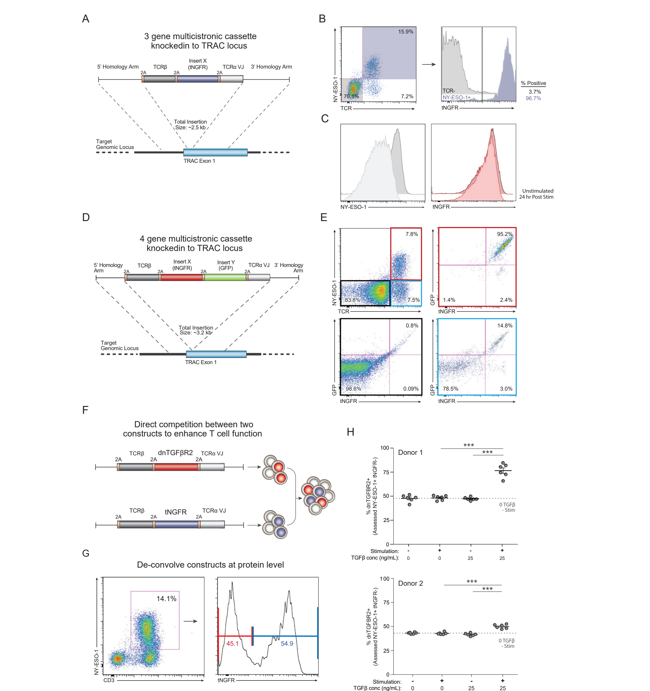
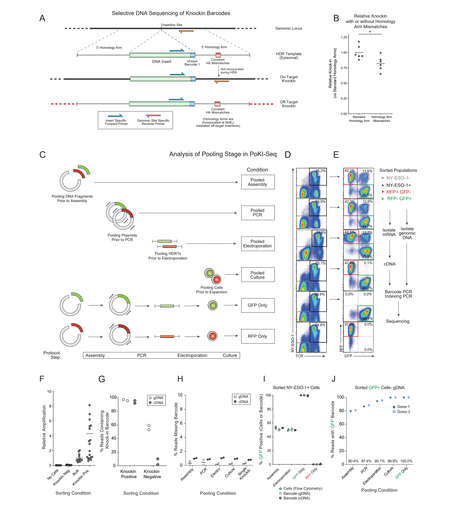
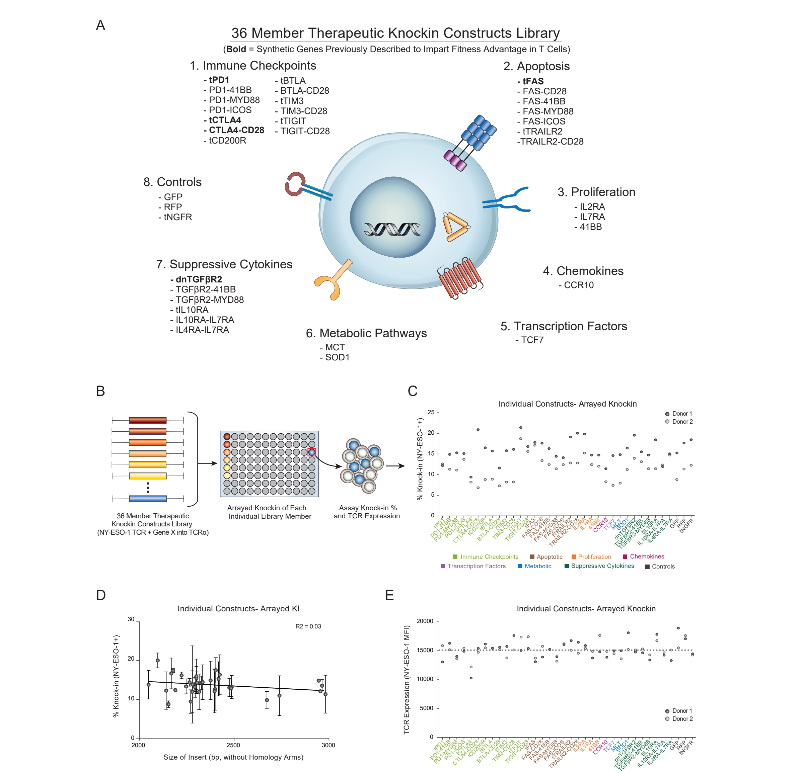
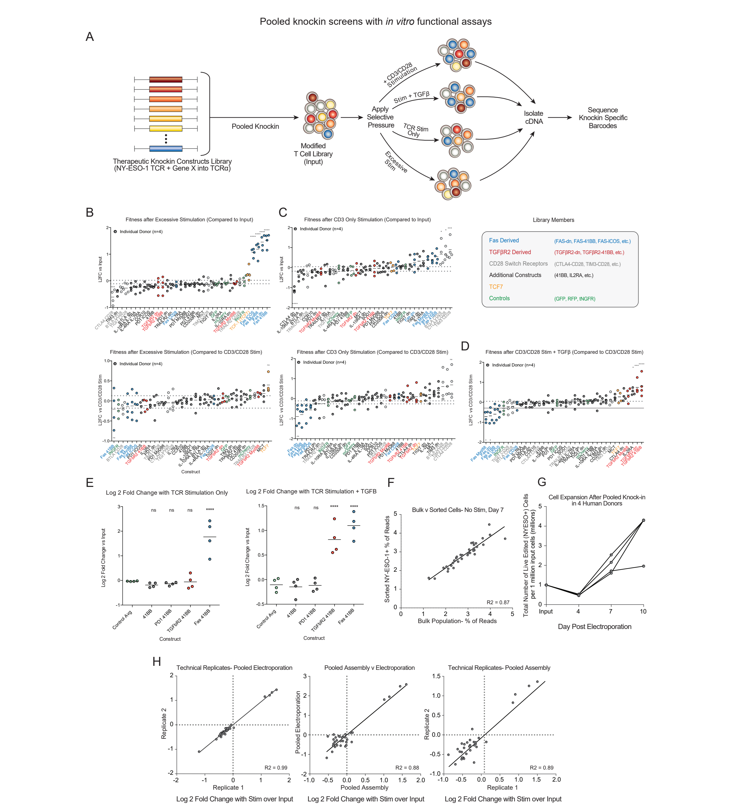
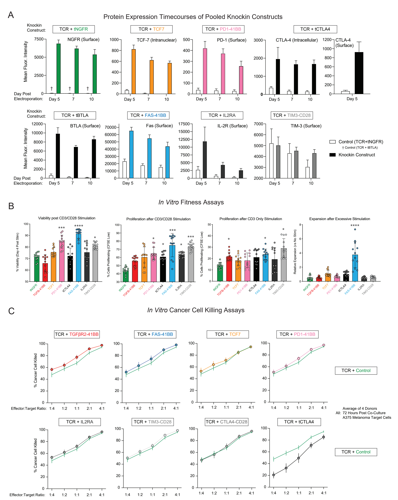
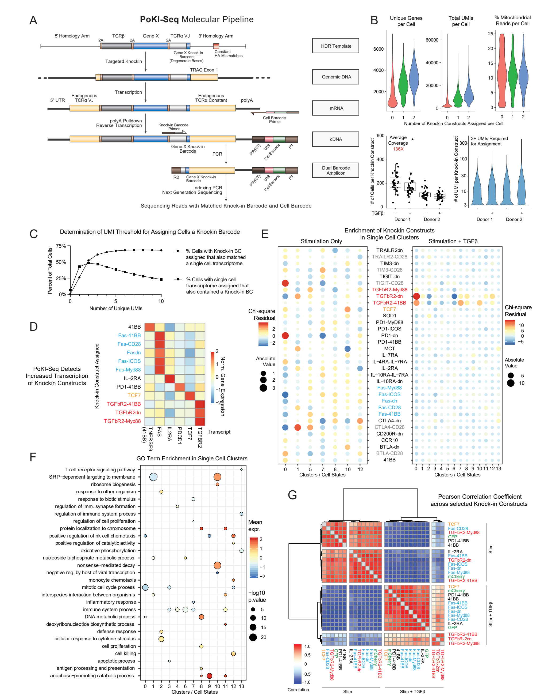
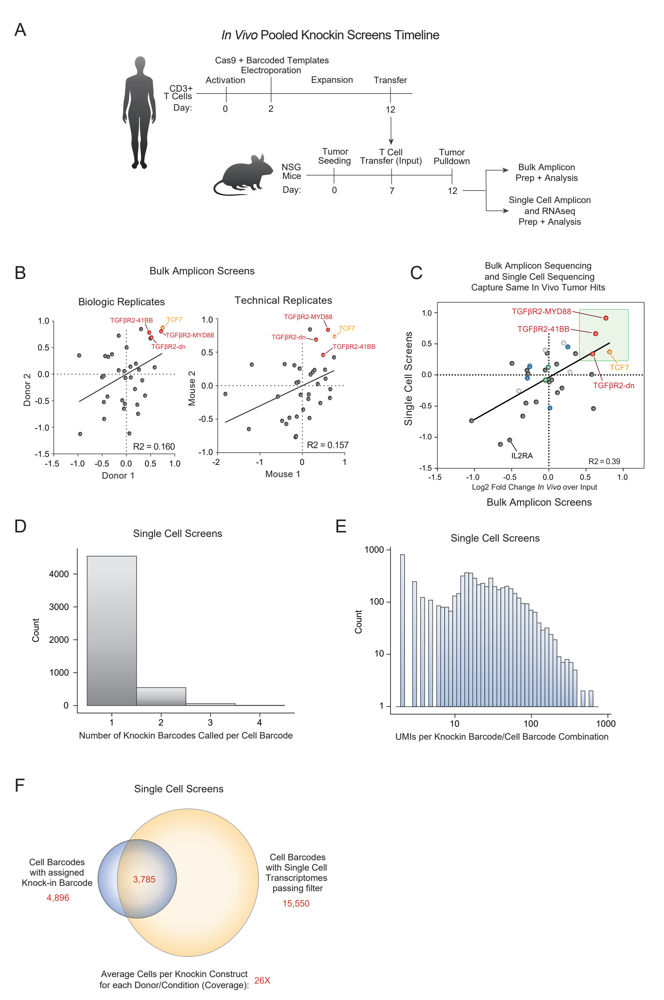